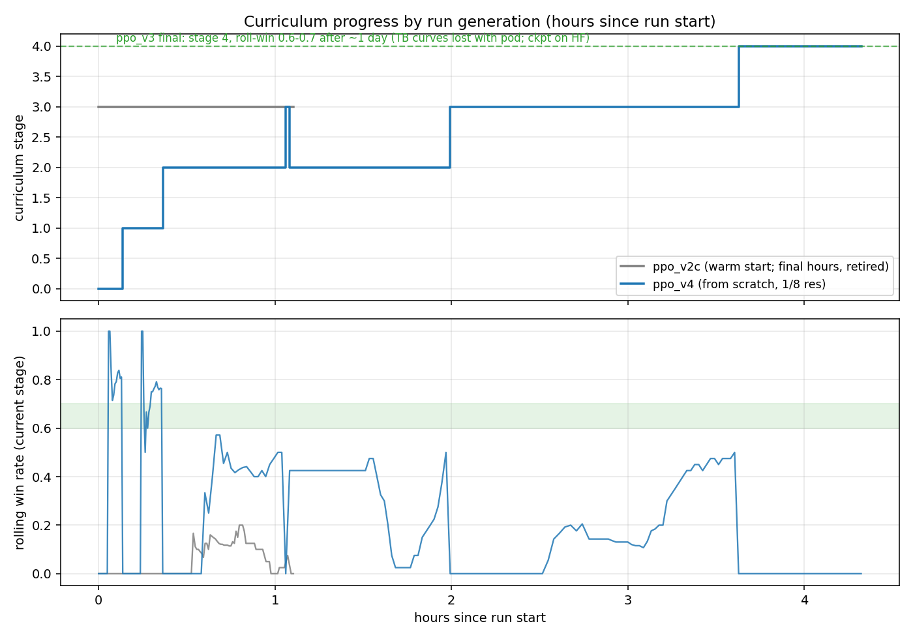
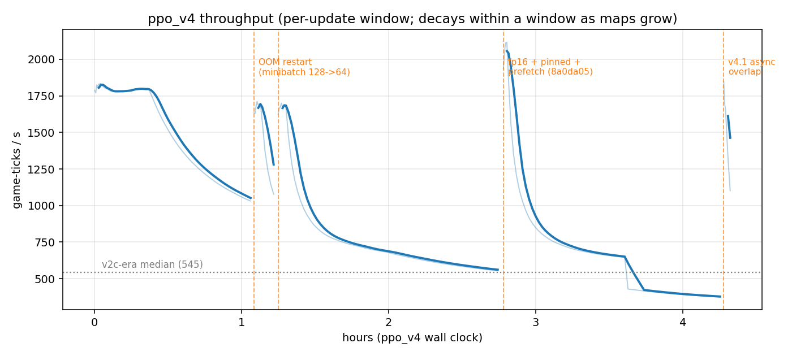
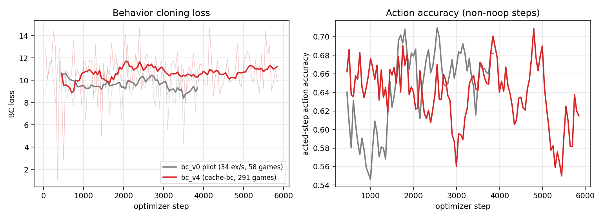
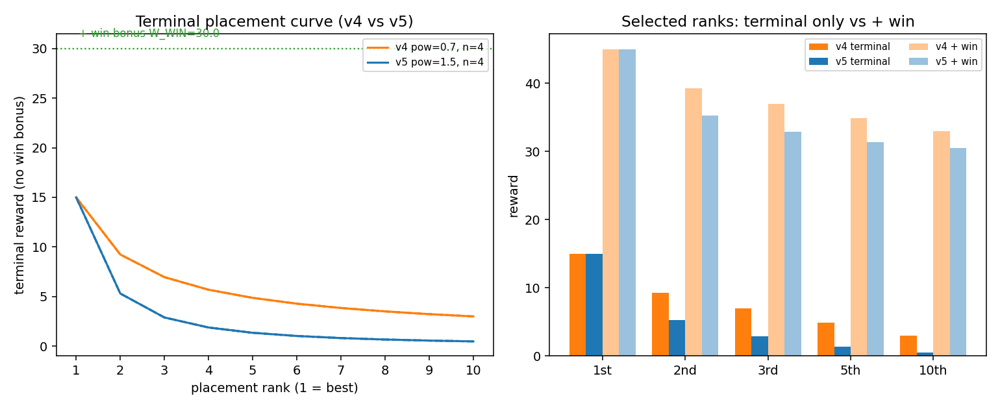
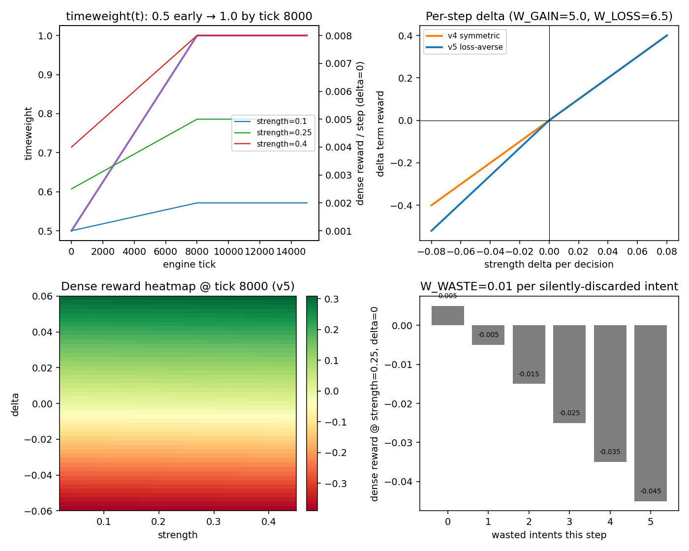
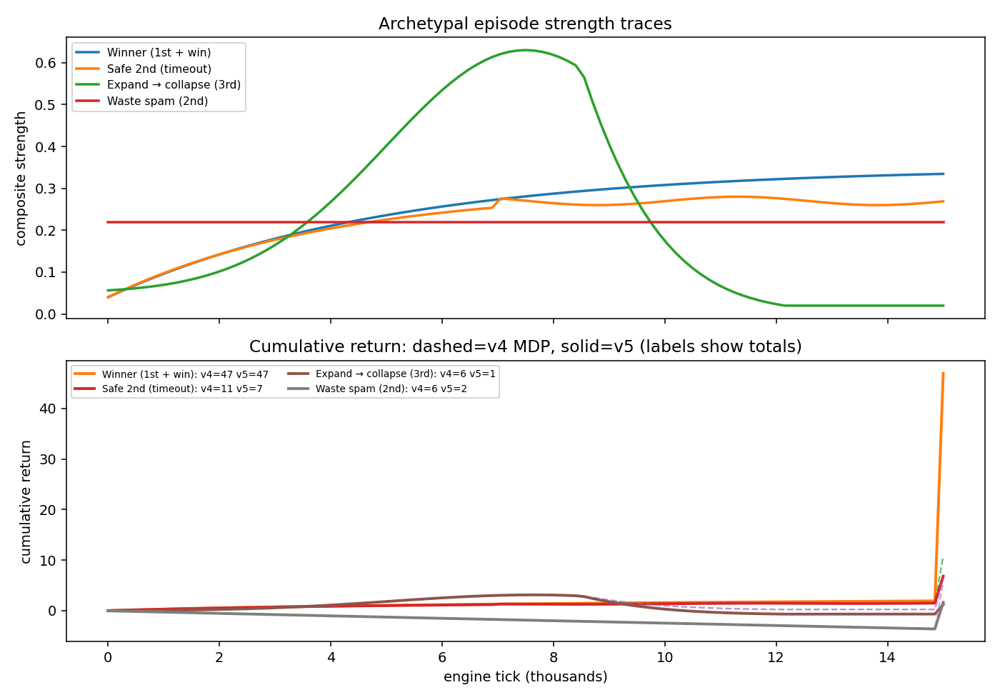
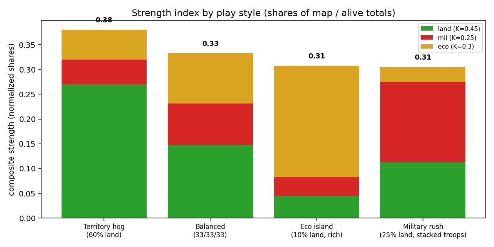

Self-play RL on OpenFront.io, real engine, ~two days in. DESIGN.md · README
V9 sparse-win parallel experiment ready
(writeup,
#35).
Fresh ppo_v9 ladder: terminal +1/−1 only, 25 micro-stages,
graduate at 90–97.5% win rate. Intended to run on a second GPU box while
ppo_v86 continues the dense-shaping path.
Persistent + autoscale still live on ppo_v86
(writeup). Merged
#30–#33.
Do not shorten episodes for GPU util; grow env count via restart instead.
Earlier today: V8.6 attack-fair (writeup), V8.5 win-urgency (writeup), curriculum parity 48/48 (writeup).
Hypothesis: we have been doing a lot of reward engineering (V8.3 closeout → V8.4 boats/tempo → V8.5 urgency → V8.6 attack-fair) to force the behaviors we want. Instead, try an extremely gradual curriculum with sparse win/loss only, and require near-perfect win rate to graduate. Parallel run, not a migrate-from-V8.
V8.3–V8.6 share the same curriculum schedule and keep stacking dense terms
(strength, delta, closeout Φ, boat outcomes, tempo, embargo/combat thrash, death
overrides). That path is valuable, but each knob is another hand-written prior.
Zeroing V8.x coeffs is not enough for win-only: vecenv still
always applies strength, strength-delta, waste, death, and place terminal. So V9
is a new schedule + a hard sparse branch in reward assembly, not
--migrate-v86-to-v9.
Neither system was pure win/loss with no scaffolding. The useful contrast is what kind of scaffolding they used.
| AlphaStar (SC2) | OpenAI Five (Dota) | Our V9 bet | |
|---|---|---|---|
| True objective | terminal +1 / 0 / −1, undiscounted |
win + dense human metrics | terminal +1 / −1 only |
| Scaffolding | supervised init on replays; continual KL to SL policy; z pseudo-rewards (build-order edit distance, Hamming on cumulative stats, each ~25% active) |
hand-shaped gold/XP/kills/deaths/last-hits/buildings; zero-sum vs enemy; team-spirit anneal; early-game reward time-weighting | environment curriculum (tiny steps, high gates) instead of dense reward |
| Curriculum | league / PFSP opponent selection (hardest, near-level, exploiters) | mostly scale + self-play; shaped rewards from day one | 25-stage map/bot/difficulty ladder, win_at 0.90–0.975 |
| Sparse ablation | they kept human z + imitation; called sparsity a core hard problem |
win/loss-only worked but ~10× slower in 1v1 and plateaued mid-run; 5v5 sparse beat scripted bots with a large sample-efficiency hit | accept slower learning; make early stages trivial enough that wins arrive often |
Takeaways we are acting on:
win_at: 1.0 with current should_advance (mean > gate over WINDOW=40): perfect 40/40 still fails > 1.0. Use 0.975 for “essentially locked.”| Knob | V8.6 (live) | V9 (parallel) |
|---|---|---|
| Run name | ppo_v86 | ppo_v9 |
| Schedule id | v8.3 | v9 |
| Reward profile | v8.6-attack-fair-v1 | v9-sparse-win-v1 |
| Step reward | strength + delta + closeout + boat + tempo + thrash + … | 0 every step |
| Terminal | place + W_WIN(+extra) + fast-win; death penalty mid-episode | +1 win / −1 loss, death, or timeout |
| Stages | 15 (V8.3 insert + Easy/Med/Hard ladder) | 25 micro-steps (bots 0→2→5→10→15→20→30→40→50→65→80, then Med/Hard/Imp) |
| Graduation | often 0.12–0.45; V83 stages 5–6 also conversion gates | 0.90–0.975 win rate only (no conversion gate) |
| Start stage | 5 (migrate lineage) | 0 fresh |
| Gamma / ret_clip | 0.999 / 3000 | 0.9997 / 2 (longer credit for sparse terminals) |
| Migrate from V8 | yes (reward-profile chain) | none (parallel experiment) |
| # | maps | bots | diff | nations | win_at |
|---|---|---|---|---|---|
| 0 | Onion | 0 | Easy | Exact(1) | 0.975 |
| 1–2 | Onion | 0 | Easy | Exact(2→3) | 0.95 |
| 3–4 | Onion | 2→5 | Easy | Exact(3) | 0.925 |
| 5–9 | Onion→Pangaea→Caucasus | 5→15 | Easy | Exact(3→6) | 0.90 |
| 10–18 | 3-map → V82 pool | 15→80 | Easy | Default | 0.90 |
| 19–21 | V82_MAPS | 30/50/80 | Medium | Default | 0.90 |
| 22–24 | V82_MAPS | 80/120/150 | Hard→Impossible | Default | 0.90 |
Env targets: 24 early, taper to 8 on late broad-pool stages (same spirit as V8.3). Rehearsal 25% still applies; rehearsal eps do not count toward the gate.
CurriculumSchedule::V9 + V9_ENV_TARGETS in
rust/ofcore/src/curriculum.rs.RewardConfig.v9_sparse_win → profile v9-sparse-win-v1;
sparse_terminal_reward(won).vecenv early-returns the sparse path before strength/delta/shaping.--v9-curriculum and --v9-sparse-win must be used
together (mutually exclusive with V8.x schedule flags).reward_profile for V9; resume requires matching
v9-sparse-win-v1. No migrate-from-V8 path.NUM_GPUS=4 bash scripts/pod_train_v9.sh
(or V9_MODE=1 bash scripts/pod_train_v8.sh). Smoke:
bash scripts/tests/pod_train_v9_test.sh.PR: #35
(sully/v9-sparse-win). Intended to A/B against live ppo_v86
on a second pod.
Clarified game-time vs wall-clock, then fixed the inverse
--persistent-actors / --auto-scale-envs relationship and
deployed it onto live ppo_v86.
OpenFront’s config is msPerTick() = 100 → 10 ticks/s of normal
game time. So:
| Ticks | In-game time | Notes |
|---|---|---|
| 600 | ~1 min | e.g. nuke “recent” window comments in client |
| 15000 | ~25 min | oftrain / Python PPO default max_episode_ticks |
lobby maxTimerValue 15–40 | 15–40 min | same order as our episode cap |
Half-hour games are fine and desired — we want episodes long enough to actually
win. The earlier “collectors install in 3–4 minute games” figure was
pod wall-clock collect stall (one PPO update’s collect phase), not match
length. Shortening max_episode_ticks for util would train the wrong
horizon.
Persistent owners pin actor/learner CUDA state to long-lived OS threads. Live
mid-run spawn_worker growth (the legacy autoscale path) is unsafe under
that ownership model. The trainer therefore used to print a warning and
cfg.auto_scale_envs = false whenever both flags were set.
Meanwhile V8.3 stage env targets drop late stages to ~8–12 envs/GPU for host memory / engine tail latency. With autoscale forced off, stage 8 stuck at ~10 envs/shard → long collects, GPUs often idle (VRAM full, util spiky/uneven). It looked like “persistent ⇒ bad util” and “more envs ⇒ need shorter episodes,” but the real coupling was autoscale disabled + low stage floor.
Curriculum stage env changes already used a safe path: checkpoint →
restart_request.json → clean exit → pod_train_v8.sh relaunches at
the new count. Util autoscale just wasn’t wired into that path.
--persistent-actors, GPU-util growth
sets requested_env_target, writes
restart_request.json with reason=gpu_util_autoscale, and exits.
Same supervisor path as stage env-target resizes. Legacy (non-persistent)
collectors still live-spawn.max(previous envs_per_shard, stage_floor) so autoscale gains stick.
Cold start still honors the stage schedule. Explicit
requested_env_target always wins (stage shrink/grow or autoscale).min_envs alignment: default floor is CLI --num-envs, not
stage_env_targets[--stage] (often an early-stage 24). After resolve, if
min_envs > live count, snap down so we don’t jump from 10→24 on the
first check.AUTO_SCALE_ENVS=1,
MAX_ENVS=20, TARGET_GPU_UTIL=0.85, step 2. Override with
AUTO_SCALE_ENVS=0.PRs: #30 (core), #31 (min_envs), #32 (minibatch / restart consume), #33 (clamp to max-envs).
ppo_v86 on 4×A40)First autoscale check correctly requested 10 → 26 envs/shard
(reason=gpu_util_autoscale). Then three failure modes stacked:
minibatches ≤ every stage_env_targets entry (late floors are 8). Growing
to 26 recomputed minibatches=13 → instant
Error: recurrent PPO requires minibatches <= envs per shard. Fix: check
only the resolved live env count after sizing, not the whole stage table.restart_request.json on
failed boot; pod_train re-read it forever (26 → 26 every ~1s).
Fix: supervisor mvs the request to .last when consuming it.MAX_ENVS=20; clamp resolved startup count to
--max-envs so a stale requested_env_target cannot OOM the next boot.
Cleared the pending 26 request and relaunched at 16.4c0e01fe under /tmp/v86-validation, tmux
v86-production.ppo_v86/latest.safetensors @ update 651, stage 8,
profile v8.6-attack-fair-v1.--auto-scale-envs --max-envs 20,
max_ticks=15000.Next: let util-driven restarts step toward 20; watch OOM; leave reward settling alone until env count moves. Still do not cut episode ticks.
V8.5 mid-run “unlearning” audit → reward-only ppo_v86
that resumes the same weights.
last_attack_decision,
so nearly every retreat paid premature −0.10 and AttackRetreat churn −0.05.W_DELTA_GAIN=5 vs W_DELTA_LOSS=6.5
taxes the troop-burn-before-land shape of every attack.W_DEATH=1 vs positive place terminal.prev_strength=0 at reset → free +gain×share.| Knob | V8.5 | V8.6 |
|---|---|---|
| Reward profile | v8.5-win-urgency-v1 | v8.6-attack-fair-v1 |
| Dominance threshold | 0.55 | 0.30 (matches tempo) |
| Delta loss / dominant | 6.5 / 5.25 | 5.5 / 5.0; symmetric while attack open |
| Premature / thrash | −0.10 / −0.10 + churn stack | −0.03 / −0.03; first-open sticky; skip combat churn |
| Death | 1.0 | 10.0 |
| Boat landing | new sourced attack only | also any open sourced attack (no big refund) |
| prev_strength | 0 at reset | seeded from initial / spawn composite |
| Migrate | --migrate-v84-to-v85 | --migrate-v85-to-v86 |
Launch: SKIP_SYNC=1 V86_MODE=1 → ppo_v86, seed from ppo_v85.
Overnight ppo_v84 audit → reward-only ppo_v85
that resumes the same weights.
| Knob | V8.4 | V8.5 |
|---|---|---|
| Reward profile | v8.4-boat-tempo-v1 | v8.5-win-urgency-v1 |
| Extra win bonus | — | +30 on win (W_WIN 30 → effective 60) |
| Fast-win coef | 8 | 12 |
| Tempo coef / threshold | 0.005 @ 0.55 | 0.015 @ 0.30 |
| Embargo | flat churn only | stop while Hostile/Distrustful −0.15; recovered +0.02 |
| Attack/retreat | flat churn only | premature retreat / thrash reengage −0.10 each |
| Migrate | --migrate-v83-to-v84 | --migrate-v84-to-v85 |
Relations are now emitted in native entities obs (reward-only; policy tensors unchanged). Embargo-stop is priced from the pre-step relation score. Combat outcomes use a sticky decision window (same length as churn window).
Live ppo_v83 on 4×A40 (optimized trainer), then design of
reward-only ppo_v84 that resumes the same weights.
Migrated from V8.2 stage 5 into V8.3’s inserted Easy closeout stage (Onion/Pangaea/Caucasus, 10 Easy bots, Exact(6) nations, win_at 0.45) with land-share potential Φ from 0.45→0.80 and a dual advancement gate (wins + conversion). Early episodes were deaths at ~0.15–0.18 max land; within ~15 updates it was hitting ~0.80 land and converting. At advance: 14/25 wins, 14/14 conversions among qualifiers. Across 57 finished stage-5 episodes: 26 wins, 27 closeout reaches, 26/27 converted. Optimized infra held ~80–100% GPU util after the NCCL SHM / fused BPTT / cross-map batching work.
Stage 6 (30 Easy, broader maps, 16 envs/shard) is where playtesting hurt:
under greedy the mode action is often boat, and coordinate
overlays show destinations are effectively random. Stochastic training still
explores attack/build, so train metrics look “kind of OK” while deployment-style
play looks brain-dead.
Play/eval should be greedy; PPO rollouts must stay stochastic. Mixing greedy
trajectories into training does not invent a better mode — if greedy boat-spam
is already bad, you either reinforce a free launch or add noisy on-policy junk.
Temperature does not exist in this stack; exploration is softmax + entropy
floor. The webbot path has --greedy; rl/play /
play_live.sh default to sampling and will lie to you.
boat does not create an immediate strength_delta
slap for a stupid destination.W_WASTE=0.01 only
when translate fails. A successfully launched stupid boat is not waste.Longer GRU/BPTT helps a little; it does not invent a boat-quality signal. Bigger GRU also breaks the checkpoint. So V8.4 keeps hidden size 256, bumps BPTT/rollout to 32/64, and adds an explicit outcome term.
Across 161 V8.3 episodes the inverse-pair counts were roughly: embargo↔stop 333, attack↔retreat 211, boat↔cancel 70. Window=2 only caught adjacent undos; we bumped to 16. That still does not explain boat addiction — and explicit churn is not the fundamental fix for free reversible actions (mask/gate inverses or price outcomes).
ppo_v83)| Knob | V8.3 | V8.4 |
|---|---|---|
| Weights / schema | recurrent v2 | unchanged |
| Curriculum | v8.3 stages | same (--v83-curriculum) |
| Reward profile | v8.3-closeout-v1 | v8.4-boat-tempo-v1 |
| BPTT / rollout | 16 / 32 | 32 / 64 |
| Envs/shard default | 24 | 16 (VRAM headroom) |
| Boat outcome | — | useful +0.15 / destroyed −0.20 / cancel −0.03 / own-shore −0.05 |
| Tempo | — | −0.005 × late² while dominant |
| Fast win | — | +8 × (1 − tick/max) on win |
| Migrate | --migrate-v82-to-v83 | --migrate-v83-to-v84 |
Boat outcome is categorical at resolution (not launch/cancel Δtroops),
so it does not reintroduce the old churn farm. Pending transports are tracked
by unit id; classification uses sourced land attacks, cancel flags, and refund
heuristics. Metrics: reward/boat_outcome, reward/tempo,
boats/*.
What we are not doing yet: hard-masking boats when land attack exists (user wants learning, not forbidding), bigger GRU, mixing greedy into PPO.
SKIP_SYNC=1 V84_MODE=1 from a tree with this branch;
seeds once from local/HF ppo_v83.--flag=-0.20 form; bare
-0.20 is parsed by clap as an unexpected flag.openfront/resources/maps — symlink the
maps tree from a populated checkout before spawn.--greedy or you will re-learn the sampling lesson.NCCL_P2P_DISABLE=1 /
NCCL_IB_DISABLE=1 (SHM collectives).Outcome gate on curriculum-parity-v4 (48 self-play records,
8 bot-count buckets × 6 seeds, 20k-tick / 40-min timer horizon), plus the gate
speed work that made iterating on it bearable.
Exact tick/hash parity is still the wrong instrument for RL. Training needs the native engine to produce the same kind of game as TS: same winner when one exists, similar terminal timing, similar land share, and - when both sides honestly fail to crown a winner before the record ends - matching final rankings. The archive of 78 real 400-bot human games answers a different question (extreme bot density) and remains a poor curriculum proxy.
PathFinderStepper keeps
consecutive MiniMapTransformer duplicates as one-tick stalls; native was
collapsing them, so transport boats arrived a tick early and everything
downstream drifted.nextInt(-range/2, range/2)
floors both ends. Rust's integer division rounded odd negative bounds toward
zero (-225/2 → -112 vs TS -113), shifting the PRNG
draw and sending RF warship 241 down a different path by tick ~3115.findStation(unit)
returns the first inserted station for a unit; Rust's
station_by_unit.insert overwrote with the newest. Moroccan train
trade gold then missed a +35k payout and gold desynced at tick 8245.maxTimerValue=40 on a
20k-tick record, max_timer never fires (~24k ticks needed). Soft-identical
boards that both report winner=None are now a pass when
final tick, land tiles, and rankings match (ignoring leftover alive bits on
zero-tile players).Result: 48/48 on curriculum-parity-v4. Earlier mid-run scoreboard was ~36 → 43 → 44 → 46 → 48 as each class of bug landed.
Because it wasn't. The shell had CURRICULUM_JOBS=4 exported on a
20-core box while the script default is nproc. Separately:
cargo run re-checked/rebuilt the binary every invocation.Fixes shipped: early-exit after a winner on both TS and native (oracle
fingerprint rotates once), native outcome cache keyed by engine fingerprint +
record-set hash, exec the prebuilt outcome_gate binary, default TS
oracle workers to all cores (was capped at 4). Measured on this host: cold
compare ~691s (still bounded by the longest late/no-winner game), cached
re-run ~6ms.
Soft field agreement (alive,tiles,troops,gold,numUnits, and unit
dumps when needed) is the useful zoom lens when an outcome fails - it is not
the gate. On the road to 48/48 we routinely saw:
game.hash() bit-identity remains fragile (IEEE noise,
intentional early-exit changing finalTick on winner games) and
is not what training needs.Tooling that made the grind possible: scripts/bisect_parity.sh
(coarse then fine), OF_DUMP_TICKS_FROM / unit dumps including
patrolTile, and clearing leaked dump env vars before coarse passes
so bisects stop lying about first divergence.
v4's map coverage was thin at the high end (mostly the seven legacy
curriculum names, 6 seeds/bucket). The generator now fans mid/late buckets
across the broad V8.2-ish pool available on the pinned openfront
(Europe, Britannia, GreatLakes, continents, EastAsia, MiddleEast, Japan,
Caribbean, Iceland, FourIslands, …) and we are spinning a larger
curriculum-parity-v5 set (128 games, 16 seeds/bucket) to see
whether 48/48 was "these 48" or "the class of games the trainer actually
samples."
The goal was not "restart when CUDA dies." It was a stable trainer that can be made faster without reintroducing hidden races. All production validation below was deliberately returned to one A40 until the ownership model proved itself.
The four-A40 run repeatedly reached a few updates and then failed with
cudaErrorAssert. Because CUDA reports errors at the next synchronization, traces named
innocent operations such as memcpy_and_sync, copy_device_to_device, and
reduction kernels. Several plausible optimizations passed CPU tests and then merely changed the
time-to-crash:
Those variants were reverted rather than protected by recovery logic. A restart loop is useful for host failures, but it is actively harmful for deterministic GPU corruption: optimizer state is not restored, repeated warm restarts damaged entropy/reward, and a new process only delayed the same fault.
memcheck with stream-ordered race tracking ran
six instrumented updates and reported no invalid global-memory access. racecheck,
initcheck, synccheck, CUDA core dumps, and cuda-gdb are
available on the pod for narrower kernel bugs. PyTorch CSAN exists only in the Python frontend,
so it cannot directly instrument tch-rs.CUDA_LAUNCH_BLOCKING=1: the exact workload became stable, proving an
asynchronous ordering/lifetime failure. TORCH_USE_CUDA_DSA was not treated as a
magic environment variable; it is a PyTorch build-time option.--cuda-sync-diagnostics records the
last successful actor AE/build, policy act, D2H, bootstrap, learner batch-build, forward/backward,
gradient, optimizer, and weight-copy boundary with device/shard/update context.std::thread::scope created new collector, batch-builder, and backward OS threads
every update/minibatch. LibTorch's default CUDA stream is thread-local. Host join()
only waited for the Rust function; it did not guarantee kernels queued on that thread's CUDA stream
were complete. Three unsafe ownership boundaries followed:
ShardBatch CUDA tensors were built on one temporary learner thread and consumed
by another;VarStore::copy could return before the learner-to-actor D2D refresh completed.The immediate correctness fix synchronizes collector exit, batch-builder handoff, initialization,
and actor weight refresh. The durable architecture is opt-in --persistent-actors:
one persistent actor thread owns each GPU's actor policy, frozen AEs, terrain cache, and env workers;
on one GPU, a persistent learner owns the trainable policy, optimizer, batch tensors, backward, and
PPO update. Only CPU-owned rollouts and a packed 43 MiB Vec<f32> weight snapshot
cross channels. No CUDA tensor crosses an OS-thread boundary.
| Configuration | Evidence | Decisions/s |
|---|---|---|
| Barrier-hardened legacy ownership | 34+ consecutive updates, healthy losses | 53-60 (stage 1) |
| Persistent actor only | 17+ updates; CPU weight archive exposed as overhead | 50-55 |
| Persistent actor + learner | packed CPU snapshot; learner time ~8.7-9.5s | 62-69 |
| u8 owners + packed action D2H | 25 updates, no CUDA fault | 70-81 |
| shared AE uploads | 24 updates under persistent actor ownership | 72-79 |
| bit-packed fallout | 13+ updates; strong completed-episode rewards | 81-95 (stage 1) |
| stage-2 shape buckets + pipeline | mixed maps; persistent stream ownership | 50-56 vs 32-46 before |
| cached bf16 frozen-AE convolutions | stage 3; fp32 embedding/GroupNorm/output | 34.2-34.7 vs Python 26.1 |
The live run advanced stage 1 → 2 at update 262. Stage-1 recent reward reached roughly 41-49; entropy stayed mostly 2.5-3.5. Value MSE sometimes spiked at curriculum/non-stationarity boundaries but repeatedly recovered instead of exploding. Stage 2 is intrinsically heavier: larger maps increase both frozen-AE work and policy training, and episodes take longer before reward telemetry becomes representative. The 64-env A/B was rejected: it produced no fleet-throughput gain and increased tail/CPU pressure; 48 envs/GPU remains the measured optimum.
Step;Not retained: stale coarse-latent caching, cross-thread resident rollouts, or any change to
reward/PPO math. Frozen AE convolution weights now have cached bf16 copies under persistent actor
ownership; embedding, GroupNorm, and returned latents remain fp32. Performance claims use fleet policy decisions/s, not
Python's game-ticks/s (which must be divided by decision_ticks).
best_eval.safetensors. A two-seed pass promoted score 0.88; larger passes remain the
confidence gate.roll=43.6s, update=83.0s).
Rust cached-bf16 stabilized at 34.2-34.7 decisions/s (collect~44.4s,
train~18s). Python compile was not a usable comparison on this dynamic workload:
it remained in Dynamo tracing for many minutes without completing update 1.
One PPO run is live: ppo_v3, trained from scratch on curriculum v2, now at stage 4
(30 bots, three maps) with a 60-70% rolling win rate. Its rival ppo_v2c, warm-started
from v2b weights, was retired Jul 6 evening after the fresh run overtook it by a full curriculum
stage. Both produced genuine engine wins on stage 0 (1v1 vs one nation on Onion),
the first time the win condition has actually fired, partly because the curriculum now makes wins
reachable and partly because win detection was silently broken until today (bugs).
A parallel experiment is training a behavior-cloning warm start from archived human games.
The full observe→act→reward loop, a 7-map win-gated curriculum, restart-proof cloud training, and a
complete visualization suite (real-client replay videos with a live model-debug overlay, plus live play
against the agent) are in place.
On the observation side, the encoder bake-off (AE v3.1) is concluded:
benchmarking the bot-trained AE on real human games exposed a 16-point border-accuracy gap, and
parallel ablations found the fix: latent resolution, not channel count. Final standings on
uniform-crop eval: d8 (64ch @ 1/8) at 89.3% human / 96.1% bot borders, and the compact d8c32
(32ch @ 1/8) at 88.2% / 95.5%, one point behind at half the policy input. d8c32 cleared the
pre-registered ≥88% bar, so it is the encoder for PPO v4. The channel-count control (c96) was
pruned unfinished: its host kept dying and the resolution result had already answered the question.
First deployment-style eval of ppo_v3 (fixed-seed local games, sampled actions):
2 wins / 2 losses on the first four stage-4 games, consistent with its training roll-win.
Jul 7 ~00:45: v4.2 deployed mid-run. Watching v4 replays exposed the phantom-boat exploit
(43-78% of decisions were boats the engine silently discarded - see bugs).
v4.2 fixes it three ways (honest masks, valid-tile snapping, wasted-intent penalty) and resumed
ppo_v4 from its own checkpoint - no retrain needed, since no tensor shapes changed.
The new episode/wasted curve opened at ~85-93 discarded intents per episode
(stage 4), the measured size of the exploit; the penalty now prices those at noop-minus-w_waste.
Watch items: wasted falling, boat's action-mix share normalizing, and a transient roll-win dip
while the value head absorbs the reward shift (resumed at update 260, roll-win 0.28).
Numbers: 375k bot + 420k human full-state snapshots · AE border accuracy 71.8% → 89.3% (human) · 5.9M-param policy · 11 curriculum stages · first 2 engine wins Jul 6.
What is running, what is done, and what is stale. All RL/BC still loads frozen
ae_v3.pt until the v3.1 winner is wired into rl/obs.py.
| run | status | notes |
|---|---|---|
ppo_v9 | ready Jul 14 (parallel sparse-win) | Fresh ladder on schedule v9 / profile v9-sparse-win-v1:
terminal +1/−1 only, 25 micro-stages, gates 0.90–0.975. No V8 migrate.
Launch NUM_GPUS=4 bash scripts/pod_train_v9.sh. See
V9 writeup and
#35. Runs beside
ppo_v86, not instead of it. |
ppo_v7 | killed Jul 9 (openfront-v7, 4x H200) | From scratch on the merged v7 obs: full-state expansion +
foveated two-stream (fine /8 over own territory + border band,
coarse /16 global via ae_v31_d16c32). Launched Jul 8 late; cleared stage 0 in
22 updates. Two mid-run fixes held up: coarse-boat translator and
the entropy-controller audit. A GPU
utilization push took throughput 2,650 → ~10-13k game-ticks/s (env auto-sizing +
sub-batch bucketing + batched coverage masks) but plateaued at ~70% GPU util, hard-bounded
by the Node.js engine subprocess bridge. Killed at update 355 (stage 1, step 5.32M)
to port rl/vec.py to Rust rather than keep squeezing Python; checkpoint synced
to HF. Supersedes the v6 lineage; rl5 killed. |
ppo_v6.1 | killed Jul 8 late | Phase A + B of the scaling plan as one run: bf16 autocast +
torch.compile on the update path, epochs 4 → 2 with KL/clip-frac logging,
DDP learner over a 4x H100 SXM pod (rl5), envs scaled 96 → 384 with rollout
inference sharded across GPUs. --resume from ppo_v6's latest
checkpoint + state.json (same action space, direct resume; stage continuity preserved).
Gate: ≥4x rl4's throughput at stage 4 (~1600+ game-ticks/s vs 400), sane KL/clip-frac,
ckpt_advance + state.json working under DDP. rl4 decommissions once v6.1 is stable for a
few hours, after snapshotting ppo_v6/policy_rl4_final.pt to HF.
Killed Jul 8 late once ppo_v7 was stable - superseded by the v7 obs;
final checkpoint synced to HF. |
ppo_v6 | running (rl4) | Launched ~11pm Jul 7 on rl4 via --init-extend from frozen v5 (62 tensors
copied; action head 14 → 21, build 6 → 7, nuke 3 → 5 extended; Beta quantity
head fresh). Stages 0-3 cleared overnight under the dominance gates (0.8/0.75/0.65), stage 4
by morning; update ~743 at roll-win 0.10 vs the 0.55 gate, roll-score 0.88. Boat-dominated
playstyle, active cancel_boat hedging, Warships in the build mix - see
the behavior analysis. To be resumed as ppo_v6.1 on
rl5. |
v6_bc | playable | Pure BC prior for live play / short PPO warm-start experiments: bc_v6/bc_best.pt
folded into a v6-shape Policy (winner placement bucket, same fold as
ppo --init). On HF as v6_bc/policy.pt. Play with
bash scripts/play_live.sh --run-name v6_bc. There is no bc_v7 and
none is planned: BC is on moratorium until a controlled
experiment proves the warm start earns its cost. ppo_v7 launches from scratch.
See the BC verdict. |
bc_v6 | frozen Jul 8 eve @ step 35.6k | Feedforward BC fine-tune on the re-replayed v6 labels
(303 games, formatVersion 3), warm-started from bc_v4 via
--init-extend. A100 (bc3). Peaked ~155 ex/s with z-cache; stalled after an
EDQUOT crash loop (disk z-cache budget 450GB on a 120GB volume - mfs hides the quota in
df; fixed in 732b6c5 by defaulting Z_CACHE_GB=60).
Learning was flat: action acc 0.60→0.62 over 35k steps. Killed rather than grind to 60k;
bc3 pod terminated. Ckpt on HF as bc_v6/. See
the BC verdict. |
ppo_v5 | frozen Jul 7 eve | Launched July 7th morning. BC warm start from bc_v4/bc_best.pt, entropy floor (--ent-floor 3.5), PLACE_POW 1.5, loss-averse deltas (gain 5.0 / loss 6.5). Stages 0-4 in ~5.5h; roll-win 0.17 / score 0.85 on stage 4 by update 260. Relaunched midday as v5.1: structure-value share in the strength blend (denser rewards), resumed from its own checkpoint. See PPO v5. Frozen Jul 7 evening at update 550 (global_step 1,725,216), stage 4 (roll-win ~0.25 vs the 0.55 gate): re-earned stages 0-4 under dominance gates and cleared the stage-5 win gate twice, but both advances were lost to CUDA OOM before checkpointing. OOM root-caused and fixed post-freeze (collate padding, 36a8efb). Weights are the v6 warm start. See the freeze postmortem. |
ppo_v4 | retired Jul 7 | The full v4 stack from scratch: d8c32 encoder at 1/8, learned spawns, local owner crop,
eval loop. Stages 0→3 in ~2h, stage 4 by ~3.6h despite two restarts (OOM at minibatch 128,
then the throughput redeploys). v4.1 async collector since Jul 6 ~11pm; v4.2 (honest
boat/expand/nuke masks, valid-tile snapping, wasted-intent penalty - the phantom-boat fix)
resumed from the same checkpoint Jul 7 ~00:45, no retrain: no tensor shapes changed, only
mask semantics and a small reward term. Expect a transient dip while the value head absorbs
the reward shift; watch episode/wasted fall and the boat share of the action mix
normalize. Checkpoint on HF as ppo_v4/policy.pt. |
bc_v4 | active | Feedforward BC on the full 291-game cache-bc dataset (265 train / 26 holdout) with spawn
supervision. ~step 22k, holdout best 0.4525; feed decay root-caused (mmap churn on the
full-res stacks) and fixed with persistent staging buffers - see
Jul 7 midday. Uploads bc.pt +
bc_best.pt to HF. |
bc_seq_v4 | killed Jul 7 eve | The temporal transformer experiment (--seq 8), judged properly this time: same cache-bc data as bc_v4, A100-80GB pod (bc3), batch 8 x accum 4 effective 32. Pod bootstraps from the prebuilt cache-bc tars on HF (no raw download, no replay, no prefeaturize). Killed Jul 7 evening: holdout action accuracy 0.48-0.60 vs the feedforward bc_v4's 0.65-0.70 at 8x the encode cost per sample; the A100 sat at ~0% utilization (~10 ex/s). Temporal BC shelved until AE-latent caching makes sequence windows nearly free - see the verdict. |
ppo_v3 | retired Jul 6 night | Curriculum v2 from scratch. Stage 4 (30 bots, Pangaea/Caucasus/BlackSea) by Jul 6 evening, rolling win 0.6-0.7, roll-score 0.93. Local eval: 2W/2L over four stage-4 games, wins by outright conquest at ticks ~10-15k. Pod terminated after final checkpoint (update 632) uploaded to HF; its TB event files died with the pod. |
ppo_v2c | retired Jul 6 | Same curriculum v2, warm-started from v2b weights. Stalled at stage 3 (win rate
0.07-0.17, entropy stuck near 8) while from-scratch v3 sailed past to stage 4. Final
checkpoint (update 502, 771k steps) on HF as ppo_v2c/policy.pt. See
lessons: warm-starting from a stale reward/curriculum hurt. |
bc_v0_pilot | paused Jul 6 eve | Outcome-conditioned BC on partial human sidecars (~50 games). Stopped at step 3,850
(~185k samples) to fix the data pipeline: at ~34 ex/s the run was CPU-bound and the loss
curve was flat-noisy around 8-11 with acted-step accuracy ~0.6, too little throughput to
call it. Checkpoint on HF as bc_v0_pilot/bc.pt; resumes after the featurize
cache lands. |
bc_seq_v1 | paused Jul 6 eve | Temporal BC (--seq 8). Lost hours OOM crash-looping at batch 24 (a seq-8 window multiplies activation memory 8x; one 19.9 GiB allocation on a 24 GiB card), then ~450 steps at batch 8 before the pipeline pause: too early to read. Only 11 games had sidecars on that pod. No checkpoint yet (died before first save interval). |
ae_v31_d8c32 | done, chosen for v4 | Compact v3.1: 32ch @ 1/8 latent. Uniform eval 88.2% human / 95.5% bot borders,
one point behind d8 at half the latent footprint. On HF as ae_v31_d8c32.pt. |
ae_v31_d8 | done | v3.1 @ 1/8 latent, 64ch. Best absolute border accuracy: 89.3% human / 96.1% bot. On HF
as ae_v31_d8.pt. Kept as the quality ceiling; d8c32 preferred for policy input
size. |
ae_v31 | done | Full v3.1 decoder/loss stack @ 1/16. Finished 40k steps; human borders 78.5% (worse than mixed-data v3 retrain). Superseded by d8. |
ae_v31_c96 | pruned | Channel-count control (96ch @ 1/16). Killed twice by an oversubscribed host (load 435 on 384 cores) and abandoned: d8 vs v3.1-at-1/16 already isolated resolution as the variable that matters, so the control's answer would not change any decision. |
ae_v3_mix | partial | Homelab bot+human retrain, OOM at step 22.7k. Proved data helps (80.1% human borders) but run didn't finish. |
ppo_v2b, v1 curriculum | stale | Reached stage 4 on 90-player Pangaea with top-third placement but 0 wins. Curriculum, reward, and win counting all changed since; checkpoint only useful as warm start for v2c, not as a progress metric. |
ppo_smoke, ppo_pod1, etc. | archived | Early plumbing runs. No longer representative. |
Is PPO actually improving? Yes, but the signal was hard to read. Placement-gated curriculum v1 looked like progress (roll-score ~0.65 on Pangaea) while the agent never won. Curriculum v2 reset both runs to 1v1, win detection was broken until 12:06, and both policies now win stage 0 in replay. By evening v3 had cleanly won the head-to-head: stage 4 with 60-70% wins vs v2c stuck at stage 3 with 7-17%, which is why v2c was retired. Neither lineage has been trained with the new encoder or BC warm start yet.
Complete chronological record (newest entries at bottom of list).
boat on 43-78% of decisions (p(boat) up to 0.79, p(noop) 0.01) with nearly all of
them silently discarded by the engine - the cap is 3 transports in flight. Root cause: a
whole class of actions was "legal" per the mask but a guaranteed no-op at execution, and a
discarded intent was reward-identical to noop with occasional upside - a free lottery ticket
the policy learned to farm (ppo_v3's version was 61% build on random land). Fixed
everywhere at once: masks now match engine state (canBoat = boat slot free + own
shore, canExpand = neutral land actually borders, hasSilo now
respects silo cooldown + spawn immunity), the translator snaps tile picks to tiles that can
work (boats never target own/ally land, builds only own territory, ports own shore), and
whatever still slips through is counted by the bridge (wasted, exact engine
calls per intent) and penalized at W_WASTE=0.01 per discarded intent, so noop strictly
dominates doomed actions. New episode/wasted TB curve. Tagged v4.2 and
hot-deployed to the running ppo_v4 pod at ~00:45: trainer killed, repo synced,
resumed from the same checkpoint (update 260, stage 4, win-window intact) - resume-safe
because nothing about the network changed. First v4.2 episodes measured the exploit at
~85-93 wasted intents per episode.encode_grids), which also fixed a stale-fallout bug (dynamic fallout was riding
inside the per-episode cached terrain tensor). Raw 64x64 local owner-crop bypass. Learned
spawn placement end to end: spawn action + legal-region mask in PPO, spawn-phase snapshots +
labels in replay sidecars (formatVersion 2) for BC. BC prefeaturize cache
(scripts/prefeaturize_bc.py): 1.45 ms/sample single-threaded vs ~15-20 ms before.
PPO v4 fixes: entropy anneal, stage LR warmdown, persisted win-gate window, periodic
fixed-seed greedy eval. Pod supervisors got commit assertions and crash-loop backoff.Observation stack, reward, curriculum design (written this day).
The core architectural finding so far. Three iterations:
The lesson: a one-bit fact reconstructed at 95% is strictly worse than reading the bit. Autoencoders are for high-dimensional state; never make exact small state fight the map for latent capacity.
AE details that held up: border-weighted cross-entropy (borders blur first and matter most), owner relabeling to static per-game spawn slots (any player count, fixed channels), fully-convolutional training on random crops (one model, any map size), and rarity-weighted BCE detection for structures: count regression collapses to all-zeros on 99.9%-empty grids.
The trigger: overall tile accuracy saturates near 99% for every model (water and player interiors are easy), so the honest metric is border-tile accuracy, and it wasn't in the training logs at all. Benchmarking the bot-trained v3 on the newly replayed human games exposed a 16-point domain gap: 87.5% border accuracy on bot data, 71.8% on human. Human territories are gnarly (naval invasions, enclaves, 50+ player fronts); nation bots grow blobs.
Two fixes ran in sequence. First, retraining v3 unchanged on a bot+human mix recovered the domain gap (80.1% human), so data was part of the problem. Then v3.1 attacked the architecture with seven changes at once plus two ablations to find the real constraint:
Result: resolution is the constraint, not capacity. Uniform-crop eval, 256 samples:
| model | latent | border (human) | border (bot) |
|---|---|---|---|
| v3 bot-only | 64ch @ 1/16 | 71.8% | 87.5% |
| v3 on bot+human mix | 64ch @ 1/16 | 80.1% | 86.8% |
| v3.1, all fixes | 64ch @ 1/16 | 78.5% | 90.7% |
| v3.1 @ 1/8 res | 64ch @ 1/8 | 89.3% | 96.1% |
At the same 1/16 resolution, the v3.1 decoder/loss work helped bot borders but couldn't beat plain mixed-data retraining on human borders. Borders are high-frequency spatial detail, and a 64-number vector summarizing a 16x16 patch simply cannot store where a ragged front cuts through. Halving the patch to 8x8 bought ~9 points on both domains. Structure detection stayed at precision/recall 1.0 throughout. The catch: the 1/8 latent is 4x the policy input; a 1/8 x 32ch run (2x baseline) is in flight to see if the win survives halved channels, alongside the 96ch control.
Complementary hedge (decided): the policy will also receive a raw local owner-map crop around its own territory, exact borders where the agent acts most, latent for global context. The latent doesn't have to be pixel-perfect everywhere.
Full intent surface from day one, legality masking only (never curricular). Factorized masked heads over a shared conv trunk. One flat softmax is impossible (tile arguments alone are millions of options):
| head | chooses |
|---|---|
| action type | noop, attack, expand, boat, build, launch_nuke, alliance req/reject/break, donate gold/troops, embargo, retreat |
| player pointer | target player slot |
| tile-region pointer | a 16x16 map region; the bridge snaps to the best legal tile inside it |
| build / nuke type | structure or warhead class |
| quantity | troop fraction bucket |
Masks come from exact engine legality calls each step; the policy can only pick what the engine would accept. Where a tile argument can still fail at execution (boat destination unreachable by water, build site too close to another structure), the bridge counts the discarded intent and the env charges w_waste for it - the mask keeps the policy honest, the penalty keeps the engine honest. Full intent table in DESIGN.md.
Iterated from raw land occupancy to a composite strength index: 0.45 x land + 0.25 x military + 0.30 x economy (shares). Land alone mis-scores legit strategies like tiny-island gold-stacking.
w_str x strength x timeweight, timeweight 0.5→1.0 over the first 8000 ticks.
Strong late is worth double strong early, and it doesn't net to zero on death like pure deltasw_place x place^-pow (v4: pow=0.7; v5: pow=1.5), power law: 1st ≈ w_place, 2nd much lower at v5;
the dead rank behind everyone still alivew_win = 30 (doubled when the curriculum became win-gated)w_waste = 0.01 per intent the engine silently discarded
(doomed boat, invalid build site, expand with no neutral border): without a price these are
noop-with-upside and the policy farms them (see bugs)Eleven stages over seven maps (Onion → Pangaea → Caucasus → BlackSea → BetweenTwoSeas → World → Asia). Three principles, all added after watching v1 fail to progress:
Advancement is win-gated: rolling win rate over the last 40 on-stage episodes must exceed 0.5. The agent must be winning more often than not, not merely surviving.
josh-freeman/openfront-rl
(HF mischievers/openfront-rl-agent,
"v19b") is the other PPO agent on this engine we're aware of, and a lot of our scaffolding follows
from what they figured out first. The main fork is observation and tile choice: they keep a compact
scalar view (~96 floats) and route spatial decisions through hand-coded heuristics (closest border
tile, pickBuildTile()); we put map structure in the observation stack and learn tile
selection with a spatial pointer (the bridge still snaps to legal tiles). Different tradeoffs: compact
obs plus heuristics is simpler to train and deploy; richer spatial input is heavier but can in
principle learn geography, chokepoints, and nuke aim.
| AlphaFront | openfront-ai | |
|---|---|---|
| observation | ~96 floats (16 player scalars + 16 neighbors × 5); no map | frozen spatial AE latent + ego planes + entity tokens + raw bypass |
| actions | 17 types, 16 neighbor targets, 5 fractions; no diplomacy | full intent surface incl. diplomacy; factorized heads, engine masks |
| tile choice | heuristics (pickBuildTile(), closest border, etc.) |
learned spatial pointer; bridge snaps within the chosen region |
| network | MLP 512-512-256, ~0.5M params | CNN + token transformer + pointers, 5.9M |
| curriculum | 10 win-rate-gated stages, LR warmdown | 11 win-gated stages, 7 real maps, rehearsal (gating idea borrowed from them) |
| human data | not in scope | archive replay pipeline + behavior cloning |
| live play | Puppeteer bot driving a browser | native websocket client, no browser |
| results | 100% vs Easy/2 opp (20 games); survival plateaus ~35–47% mid-curriculum | first engine wins on stage 0; climb in progress |
What they showed works here, and we adopted: PPO converges on this engine at ~10 ticks/decision (we chose the same cadence independently); win-rate-gated advancement is viable. Still on our borrow list from their setup: LR warmdown on stage transitions; tiny flat generated maps as an even softer stage 0; a mid-game "beat all bots" gate so advancement doesn't wait on long endgames. On our side we've added a human-replay pipeline for behavior cloning: extra imitation signal that's awkward to fold into a purely scalar observation.
Throughput engineering, progress graphs.
GPU util was poor and env stepping was the bottleneck:
--compile flag.8a0da05). The
single main thread was serializing fp32 copies, minibatch collation, and GPU compute; observations
now ride as fp16, transfers go through pinned buffers, and a worker thread collates the next
minibatch during the current backward. 3.6x on stage-3 maps (~590 → ~2100 game-ticks/s).b8c331c). A collector
thread builds rollout k+1 (env stepping + encode/act on a snapshot policy) while the main thread
runs the PPO update on rollout k. One rollout of staleness; old_logp stays anchored
to the acting snapshot so the clipped ratio math is unchanged. The former ~35s rollout phase now
hides inside the update phase (perf/rollout_wait_s tracks what's left).Generated by scripts/make_progress_graphs.py from the surviving TB event files and
BC jsonl logs. ppo_v3's curves died with its pod (lesson: archive events before terminating);
it appears as annotated reference lines from the devlog record.



Phantom-boat fix and the Rust port (~midnight).
Every performance fix this project has shipped was some flavor of "get work off the single Python thread" (VecEnv processes, GPU featurization, pinned prefetch, the v4.1 async collector). Two structural moves land the endgame:
9f262a6). The two stable, allocation-heavy
loops are now Rust with the GIL fully released: cache-bc frame decode (zstd + split) and the
pad+stack collate that runs per PPO minibatch (2.6x single-threaded, and it no longer blocks
other threads at all - which is what the prefetch thread actually needed).
rl/native.py keeps numpy fallbacks so nothing requires the toolchain; pod
scripts build the wheel opportunistically at boot. Formats are frozen (CACHE_FORMAT=1,
obs v4), which is what makes these safe to freeze in a compiled language.Round two (8aa7fbd): the whole BC sampler is Rust now. The DataLoader
process workers turned out to be a regression in production - 16 workers sat idle while the
main process choked unpickling ~50MB raw batches off the IPC queues (stall 300s per 50-step
window on bc2). The fix was to delete the abstraction, not tune it:
sample_batch(n) does everything rl/bc_data.py did
per sample (zstd frame/entity/step decode, serde JSON, the full obs-v4 featurization,
label→head targets, legality forcing) in Rust, rayon across step draws, GIL held only
to hand back numpy dicts. Laptop: 639 → 2631 samples/s vs the Python path; parity
proven exactly (every array, 11.8k samples) by scripts/test_ofrs_parity.py.
sample_windows(batch, k) draws a whole seq micro-batch in parallel for the
temporal run. The trainer feeds from a plain thread pool again - no processes, no pickle.ofrs::unpack_arrays. Numpy fallback
speaks the same protocol.np.stack calls now go
through ofrs::stack_f32/f16 (parallel copy, GIL released), so the PPO prefetch
thread's collate no longer serializes against the collector.expandable_segments after an OOM at update 267
(fragmentation after 1135s uptime, not the new code path).Overnight check-in through the morning session.
ppo_v4 was killed at update 433 (final checkpoint archived to HF) and ppo_v5 launched on the same pod with three MDP/optimizer changes aimed squarely at the collapse, plus a BC warm start:
--ent-floor 3.5): a multiplicative
controller on the entropy coef (x1.3 per update when measured entropy is under the
floor, capped at x30, hysteresis at 1.4x floor). v4's entropy slid 9.2 → 2.8 at a
barely-annealed coef of 0.009 - the schedule alone cannot prevent collapse, only a
feedback loop can. The scale persists through checkpoints and multiplies the existing
anneal.PLACE_POW 0.7 → 1.5. Terminal
rewards for 1st/2nd/3rd go from 45/9.2/6.9 to 45/5.3/2.9 - second place lost 42% of
its value, so "safe second" is no longer a comfortable optimum even before the win
bonus enters experience.W_DELTA splits into
GAIN 5.0 / LOSS 6.5. v4 games showed hyper-expansion then collapse (103k tiles at
t8001, dead by t10711); symmetric shaping priced a lost tile the same as a gained one,
so defense was never worth learning.INIT_BC=bc_v4 pulls bc_best.pt
(holdout 0.406) from HF, loads the 70 shared Policy tensors and folds the
winner-bucket conditioning into the head biases.Early read (30 min in): stage 0 cleared in ~25 updates, stage 2 by update 64 - v4 needed hours for the same ground. Entropy holds ~4.8 with the floor controller live (ecoef oscillating 0.010-0.048 as the controller breathes). Deliberately NOT in v5: the LSTM/temporal policy - bc3's seq-vs-feedforward comparison is the evidence gate for that, and it hasn't reached matched sample counts yet.
smp/enc/col) plus CUDA allocated/reserved every 50 steps. First readings
overturned the "sampler accumulation" theory: smp ~0s (the Rust sampler is
essentially free), col ~5s, enc 50-65s per 50-step window -
the frozen-AE encode is the entire feed cost, and it shares the GPU with the
trainer.enc grew 49 → 135s/window
while smp stayed 0.0 and col ~9s; CUDA reserved is flat
at 27.5GB; GPU util 31% with clocks at 2872/3090MHz, 43°C, 202W. So it is NOT
fragmentation, NOT thermal throttle, NOT the sampler - something CPU-side inside
encode_batch (the single-threaded np.stack H2D staging of
full-res owner grids) slows as the process ages. RSS was already 11.7GB at 34 min
uptime (23GB overnight): prime suspect is glibc heap/arena churn from the hundreds of
MB of short-lived numpy buffers per batch - consistent with a restart fully fixing it.
Experiment running: MALLOC_ARENA_MAX=2 on bc2. Real fix if confirmed:
have ofrs return pre-stacked batch arrays so the Python-side memcpy churn disappears.ppo_v5 status at the time: not stuck so much as slow - roll-win crept 0.00 → 0.17 and roll-score 0.29 → 0.85 on stage 4 by update 260, but the gate needs >0.5 wins, and the run was also OOM-crash-looping every ~1h (CUDA OOM in group_norm/conv2d at 96 envs on the stage-4 map pool; the supervisor restarts and resumes, so progress survives but momentum doesn't). Two changes:
K_BUILD=0.15 adds a structure-value share (blend
40/20/25/15): each player's finished structures are valued by in-game cost ceilings
(City/Port/Factory/Silo 1.0, DefensePost 0.25, SAM 3.0, × level) and shared over
living players' totals. Completing a building now pays an immediate
W_DELTA_GAIN spike, losing one to a nuke costs
W_DELTA_LOSS, and holding a built-up economy earns dense reward every
step - the reward is denser exactly where the action space was silent.np.stack at rl/obs.py:449 - the
terrain_static stack, ~460MB of fresh float32 per batch (19MB/sample
× 24), freed immediately. Allocations that size go through glibc's mmap path, so
every batch paid mmap+munmap page faults; on a host with badly fragmented physical
memory (65M compaction stalls, 115B failed page migrations in vmstat) the fault path
itself degrades - a fresh-allocation memcpy microbenchmark on the degraded box ran
~300MB/s cold vs 1.6GB/s warm. That's why restarts fixed it (fresh page tables, warm
buffers) and MALLOC_ARENA_MAX didn't (arenas don't govern mmap'd
allocations). Fix: encode_grids now stacks the four big full-res arrays
into persistent per-thread staging buffers (np.stack(out=...)), keyed by
array name+shape and grown to the largest batch seen - the pages fault once and stay
warm, so there is nothing left to decay.ppo_v5's checkpoint was reset to stage 0 (weights and optimizer kept,
win window cleared): it must now re-earn the curriculum under dominance gates, with
rehearsal keeping the old maps in the mix.The dense + terminal reward is fully specified in rl/curriculum.py and applied in
rl/vec.py. These panels are generated from the live constants by
scripts/make_reward_graphs.py (re-run after any tweak):




| constant | v4 | v5 (current) | role |
|---|---|---|---|
W_STR | 0.02 | 0.02 | dense: strength × timeweight each decision |
W_DELTA | 5.0 symmetric | gain 5.0 / loss 6.5 | immediate credit for strength change; losses hurt more |
PLACE_POW | 0.7 | 1.5 | terminal: W_PLACE × rank-pow |
W_PLACE | 15 | 15 | terminal placement scale (1st alone = 15.0) |
W_WIN | 30 | 30 | extra on engine win (on top of placement) |
W_DEATH | 1 | 1 | flat penalty when eliminated |
W_WASTE | 0.01 | 0.01 | per silently-discarded intent (boat/build spam) |
| timeweight | 0.5→1.0 | same | ramps over first 8000 engine ticks |
| strength blend | 45/25/30 | 40/20/25/15 (v5.1) | land / military / economy / structure-value shares of alive totals |
PLACE_POW is the main anti-safe-second lever -
2nd place drops from 9.2 to 5.3 before any win bonus. The win bonus (+30) still dominates a
outright win (45 total for 1st+win vs 5.3 for 2nd-only), but the agent has to actually win
to see it; placement alone now pushes harder for the top.W_WASTE exists: without it, doomed boats are free lottery
tickets.K_LAND/K_MIL/K_ECO shifts which strategies the dense
signal rewards mid-game.v5.1 freeze postmortem, the OOM root cause, temporal-BC verdict, v6 plan.
ppo_v5 is frozen (run killed tonight; final snapshot at update 550,
global_step 1,725,216, stage 4, roll-win ~0.25 against the 0.55 gate - it advanced from ~530
during shutdown). The verdict on v5.1 is that the reward and gate design
did their job: after the curriculum reset it re-earned stages 0-4 rapidly under the dominance
gates, the structure-value reward (K_BUILD) is visibly expressed in play (see the
behavior analysis), and it cleared the stage-5 win gate twice.
Both advances were lost to CUDA OOM crashes before a checkpoint captured them - the run kept
dying at exactly the moment it succeeded. The frozen weights become the v6 warm start.
36a8efb)expandable_segments was already on.
collate() pads every update minibatch to its largest grid, so one BetweenTwoSeas
sample (132x223 latent cells) padded all 128 samples to 29k cells, and
loss.backward() needed multi-GiB activation allocations - precisely at stage-5
entry, where the big maps first appear. The crash wasn't random; it was structural to
advancing.MAX_UPD_PIX in
rl/ppo.py); sub-batch losses are weighted by sample fraction so the accumulated
gradients are numerically identical to the padded batch. Result: GPU 30.2 → ~25GB,
throughput ~353 → ~430 game-ticks/s, zero OOMs after deploy.Replays kept reading as if the agent always attacks with ~20% of its troops. New quantity-mix
telemetry (TB + analyzer) settles it: the 5-bucket quantity head ({5,10,25,50,100}%) is alive
and differentiated, favoring 10% and 25% attacks, with 100% almost never sampled - and a stream
of 10-25% attacks reads as "about 20%". Coincidentally 20% is the engine default when
troops is null, but our intents always carry explicit counts. Nothing was broken;
the eyeball estimate landed on the mixture mean.
scripts/analyze_policy_behavior.py, run on the rl4 GPU against the update-490
checkpoint, 4 sampled episodes per stage:
9c030f7)bc_seq_v4 (temporal BC, seq=8) killed
on the bc3 A100: holdout action accuracy 0.48-0.60 vs the feedforward bc_v4's 0.65-0.70,
at 8x the encode cost per sample; the A100 sat at ~0% utilization (~10 ex/s). Lesson:
temporal BC is only worth revisiting after AE-latent caching makes sequence windows nearly
free.bc_v4 decayed 88 → 12 ex/s over ~5h, with the stall
moving to collate after the earlier obs.py staging fix. Fix:
MALLOC_MMAP_THRESHOLD_=256MB and MALLOC_TRIM_THRESHOLD_=256MB in
both pod launchers; bc_v4 restarted at ~100 ex/s.Highlights of the written plan:
BUILD_TYPES.ppo_v5.state.json to make the rolling win window
restart-proof.v6 first night, the honest cache verdict, the v6 label pipeline, and the 100x scaling plan.
ppo_v6 went live on rl4 at ~11pm Jul 7, warm-started from frozen v5 via
--init-extend: 62 tensors copied verbatim, the action head extended 14 → 21,
build 6 → 7, nuke 3 → 5 (new logits initialized near zero so existing behavior is
preserved), and the Beta quantity head fresh - the one component with no v5 ancestor. It cleared
stages 0-3 overnight under the dominance gates (0.8 / 0.75 / 0.65 win) and hit stage 4 by
morning. There it sits at the wall: update ~743, roll-win 0.10 against the 0.55 gate,
roll-score 0.88 - it dominates games but is weak at converting them, the same safe-second
pattern v5.1 showed at this stage. Entropy settled 8.9 → 7.6 over the night with the floor
controller live - no collapse, the extended heads are being explored.
Live-play stack verified against v6: scripts/play_live.sh works
end-to-end with the new action space - the agent joins a real lobby and plays full games.
scripts/analyze_policy_behavior.py against the update-190 checkpoint, 4 sampled
episodes per stage: wins 100 / 75 / 75 / 25 / 0% on stages 0-4. The interesting part is not the
win curve, it's that v6 is not playing like v5.1:
cancel_boat - a brand-new action - is
already used as an active hedge, up to 14% of actions at stage 4: launch, reassess,
recall.move_warship following
coherently after them rather than firing at random.The boat numbers above are not a playstyle, they're an exploit. 54-73% boats with
cancel_boat at 14% of stage-4 actions is launch/recall churn: the agent
sends boats out and calls them home in loops, and the roll-score 0.88 / win 0.10 split is the
signature of learned busywork rather than closing out games. The rule this hardens into
(rl/curriculum.py header): punish illegal or wasted actions, reward outcomes
(state), never individual actions. Any reward attached to an action invites pairs of legal
actions that cancel each other out and farm the shaping instead of the game.
The audit found no explicit per-action bonus to delete - the MDP was already outcome-based
(strength blend + deltas + terminal placement/win) plus the W_WASTE illegality tax,
and no-ops were never penalized. The churn reward was hiding in measurement: the strength
blend's military share read player.troops(), the home pool only, and the engine
deducts troops from the pool the moment a boat or attack launches, refunding them (minus the 25%
retreat malus) on recall. So "send boat" scored as a strength loss and
"cancel_boat" as a gain - a per-action reward pair in disguise - and boats
doubled as a free troop bank, since troops parked on them dodge the maxTroops regen
throttle. Fix: strengths() now counts troops in the field (aboard transports,
committed to outgoing attacks) toward the military share. Launching and recalling are
reward-neutral state moves; only real losses - combat deaths, the retreat malus - move the
blend. W_WASTE still prices intents the engine silently discards (a
cancel_boat with no boat in flight stays wasted), constants and the
reward-MDP table are otherwise unchanged. Lands on rl5 at its next
restart from master; watch the boat share of the action mix and the win conversion at
stage 4.
The v6 plan promised the AE-latent cache would make BC ~10x faster, on the theory that encode was 90% of wall time. Live numbers: bc2 peaked at 128-145 ex/s at 33-48% cache hits, bc_v6 runs 110-118 ex/s at 57-66% hits - call it ~2x over the ~60-100 ex/s pre-cache baselines. The profiler found why: at BATCH=96 the GPU fwd/bwd step itself caps at ~196 ex/s, because conv FLOPs scale with the padded batch-max grid. Encode was only part of the story; the model step was always going to cap throughput near there, and the cache merely exposed it.
63d6e1a): disk-persisted z-cache
(restarts stay warm instead of re-encoding from zero), a GPU-resident hit path (cache hits
never round-trip through host memory), and area-bucketed batches (batchmates share grid
sizes, so padding waste collapses - the collate-padding lesson
again, this time for throughput instead of OOM).torch.compile per shape bucket +
dynamic area-based batch sizing (256+ effective) in rl/bc.py. Expected
compound on top of the ~196 ex/s cap: ~500-650 ex/s ≈ 5-6x. Measured by a
500-step A/B on bc3 after its natural supervisor restart.The seven new v6 actions need BC labels, which means a full re-replay of the human archive:
303 games to formatVersion 3 sidecars. First estimate was ~8 hours - because the replay driver
ran 16 workers each batching 4 games, leaving a 128-core box ~95% idle. Fixed to 64 per-game
workers plus a restart-safe --rebc skip that ignores already-refreshed games
(d1ff455): ~2.5h wall for the full archive.
cache-bc-v6 tars (29GB) are on HF, so no future pod ever replays
this archive again.bc_v6 is the consumer: fine-tuning on bc3 from bc_v4's
step-55k checkpoint via its own --init-extend (e6245da - the PPO
head-extension machinery reused for BC). Step ~30k by midday, holdout evals already at
bc_v4-final levels, and the Beta quantity target trains to MAE 0.096 - the scalar labels
are cleaner than the old bucket argmax ever was.Written today after profiling both trainers. Where the time actually goes: on BC the feed is
solved and the GPU step is the ceiling (above); on PPO the rollout (52s) already hides inside
the update (82s) via the async collector, and the engine is coasting (384 cores,
wait 0.0s) - so scaling means scaling the learner first, then actors. PPO
currently does ~400 game-ticks/s at stage 4 on one 32GB GPU; target ~4,000 (10x), stretch
~40,000 (100x). Three phases, each shippable alone:
torch.compile on the update path, epochs 4 → 2 with minibatch retuning
(PPO tolerates this at our batch sizes; KL/clip-frac logging added so the gate is
measurable).rl/actor.py (extracted rollout + bridge + encode, shipping
trajectories as zstd fp16 latents, ~1-2MB/step, version-tagged),
rl/learner.py (the existing update loop + staleness handling: PPO's own ratio
clipping + a hard version cutoff first, V-trace only if measured staleness demands it),
rl/transport.py (ZMQ push/pull, no broker). Actors stateless and
spot-friendly. Cost sketch: 4x H100 learner + 4 cheap actor pods ≈ $16-20/hr chasing
~30-60x. Gated on v6.1 running stably for ~a week.Executing now: v6.1 = Phase A + Phase B together, launched as one new run on a 4x H100
pod (rl5) resuming ppo_v6's weights - same action space, direct resume, stage
continuity preserved. See the run ledger for the verification gates.
v7 direction (parallel, non-blocking): foveated two-stream observation. Uniform /16
resolution was rejected by the old ablation - border accuracy 89.3% at /8
vs 78.5% at /16, "resolution is the constraint" - but that measured uniform resolution.
Strategy-level context doesn't need pixel borders: v7 pairs a coarse /16 global stream (4x
fewer cells on the maps that dominate late training) with a fine /8 stream restricted to own
territory + the border band, extending the existing exact-borders local-crop machinery in
rl/obs.py. Near tile targets resolve on the fine stream; far targets (nukes,
cross-map boats) tolerate coarse regions. It cuts update AND rollout AND (later) transport
cost - the single biggest code lever - but it changes the observation space and trunk input,
so it needs an AE /16 fine-tune and an eval-parity gate (stage 4-6 win rate within noise)
first. That's why it's v7's headline change, deliberately NOT in v6.1.
Rejected outright: feeding raw full-res maps into the policy (no AE) - it multiplies the measured bottleneck (per-latent-cell update FLOPs) ~64x, and weight pruning doesn't reduce dense conv time on GPUs. Submanifold sparse conv over active cells stays a stretch option (~3-5x ceiling, heavy complexity), unscheduled unless post-foveation profiling still shows dead compute.
Naming note (resolved late Jul 8): the "v7" tag briefly meant two different things - the foveation idea above, and the same-day full-state observation expansion in the next section. Since no v7 run had launched, the scope was merged rather than split: v7 = obs expansion + foveation, one version, one from-scratch retrain. Both changes break every checkpoint anyway, so shipping them separately would have cost two retrains and two BC-cache formats for no benefit. See the amended v7 scope.
ONNX in the browser, headless Chromium agent, MODEL overlay restored, spawn re-roll bug.
Live play on the homelab showcase no longer needs a server GPU/CPU model process. The pipeline:
scripts/export_onnx.py exports the frozen AE encoder + policy to ONNX
(dynamic map axes; TransformerEncoder nested-tensor / MHA fast-path disabled so the trace
matches PyTorch numerically).openfront/src/client/webbot/: TypeScript ports of observation featurization
(obsCore.ts / features.ts), categorical+Beta sampling, and
intent translation, plus an onnxruntime-web session. Inference runs in a
dedicated Web Worker so the main-thread WebSocket ping loop stays alive (~5s forward pass
on World would otherwise trip the server's 60s ping timeout).?webbot=<gameID> short-circuits the normal UI
(Main.ts) and joins the lobby as AgentRL. Bot identity is isolated to
sessionStorage so a human tab and a bot tab in the same browser don't fight
over player_persistent_id.scripts/webbot_launcher.py: headless Chromium (Playwright) opens that URL;
ofshowcase hub's /play launches it instead of
rl.play. A small HTTP sidecar on --debug-port serves
window.__webbotDebug so the existing MODEL overlay keeps working.djmango/OpenFrontIO (upstream submodule we can't push to),
pinned via openfront.commit + Dockerfile remote URL, rebuilt the showcase
image on the homelab.First live bug (spawn re-roll loop). During the spawn phase the action mask forced
spawn every decision tick. Engine SpawnExecution treats every spawn
intent as a re-roll: relinquish all tiles, then re-place. The bot teleported every ~10 ticks
until a pick landed where getSpawnTiles returned empty
(SpawnExecution: cannot spawn AgentRL), leaving it with 0 tiles →
isAlive()===false → game over. Fix: gate spawn on
!player.hasSpawned() (noop while waiting out the spawn timer), plus a translator
guard that drops spawn intents once the agent already owns tiles. Python
rl.play / PPO never hit this the same way because training episodes typically
place once and the spawn phase ends quickly under the curriculum's start delay.
BC verdict + freeze, playable v6_bc baseline, and v7 full-state
observation expansion (plan, implementation, BC-regen ops saga).
Honest read across the whole BC line (bc_v1…bc_v6, plus the
killed temporal bc_seq_v4):
bc_v6 spent ~35k steps (of a planned
60k) moving action acc from 0.60 → 0.62 and loss from 8.41 → 7.55 - two percentage points
of action accuracy for a full A100 day. Temporal BC was worse (0.48-0.60) at 8x the encode
cost. The human archive is small (~300 games), noisy, and heavily no-op / UI-default
(quantity bucket 25% dominates because the client slider defaults there), so the prior
learns "looks like a human clicking around" more than "wins games."ppo_v5 cleared early curriculum stages fast off bc_v4/bc_best,
which is the real win - BC buys a legal-action prior and a non-random spawn, not a
mid-game strategy. Every later plateau (safe-second on stage 4, boat-churn, passivity
after the fielded-troops fix) was a reward / curriculum / obs problem, not a
"BC wasn't accurate enough" problem. Grinding BC from 0.62 → 0.65 would not have moved
those.df, so the quota is
invisible until writes fail; 732b6c5 defaults Z_CACHE_GB=60)
ate more calendar time than the accuracy curve justified.C_GRID 43→89 / P_FEAT 12→21 / N_SCALARS 8→11
(v7 scope), so there is no warm-start path from
bc_v6 into v7.What we did: froze bc_v6 at step 35,600 (ckpt already on HF as
bc_v6/), terminated the bc3 A100 pod (fleet = rl5 only), and published a
playable pure-BC baseline:
v6_bc = bc_v6/bc_best.pt folded into a v6-shape
Policy with the winner placement bucket (same fold as
ppo --init). On HF as v6_bc/policy.pt.bash scripts/play_live.sh --run-name v6_bc (now the script default).
Or short PPO: python -m rl.ppo --init runs/rl/v6_bc/policy.pt … on a
v6-shape checkout (pre-v7 C_GRID=43) - not against the v7 obs tree.bc_v7; see the moratorium below.BC moratorium (decided late Jul 8): no further BC runs until further
notice. The trigger for the moratorium is honesty about evidence: the one claimed BC win -
ppo_v5 clearing early curriculum fast off a BC warm start - was never isolated
from the reward/curriculum changes that shipped alongside it. Before any bc_v7 is
even considered, the existing BC artifact has to prove it does something useful. The
unfreeze experiment is cheap and fully specified: on a v6-shape checkout, run two short
PPO starts under identical seeds/config - ppo --init runs/rl/v6_bc/policy.pt vs
from-scratch - and compare wall-clock to clear stages 0-3 and stage-4 roll-win at a fixed
step budget. If the warm start doesn't show a clear, repeatable advantage, BC stays a frozen
toolbox item indefinitely. Consequences now: ppo_v7 launches from scratch with
no BC warm start; the homelab archive re-replay keeps running (raw sidecars are cheap,
shape-agnostic, and useful for eval/analysis regardless), but the BC-specific prefeaturize +
cache-bc/ upload steps are deferred, not queued.
Net: BC stays in the toolbox as a cheap prior hypothesis, not as a research track. Next accuracy wins come from obs (v7, now including foveation), reward (outcome-only / fielded troops), and scale (rl5 DDP) - not from another week of imitating 300 human games.
Scope note (amended late Jul 8): v7 is now two changes shipping as one version - this full-state expansion (implemented, below) and the foveated two-stream resolution (designed, to build). Both break every checkpoint shape, so merging them costs nothing and saves a second from-scratch retrain.
v6's transient/entity streams omitted several things a human player sees that only started to matter once the bots got good enough to punish blindness to them. A plan was written and then implemented end to end in one session:
TR_ATTACK_SRC, TR_ATTACK_RETREAT) rasterize every active
attack's origin, any player, with log(troops) intensity, plus whether it's
retreating.clut ego-classing the static ownership grid
already used, instead of one undifferentiated presence plane per unit type.Architecture: every addition goes through the existing bypass, none through the AE. The
frozen spatial AE (ae/model_v3.py) compresses only the map (ownership + terrain +
static structures); everything above is either small-and-exact (player features, global scalars)
or already-transient (unit planes), so it rides the same raw-channel/vector paths v3 established
for nukes-in-flight and diplomacy. Consequence: this part needs no AE retrain, but no BC/PPO
checkpoint survives - every shape constant moved (N_TRANSIENT 8→53,
C_GRID 43→89, P_FEAT 12→21, N_SCALARS 8→11,
N_LOCAL 4→5), so v7 is a from-scratch retrain, not a warm start (PPO only -
BC is on moratorium). Note the foveation half of v7
does need an AE fine-tune; see below.
obsCore.ts (live play) and datagen/common.ts (replay) both gained the
same new fields, kept in parity, plus a hasFn feature-detection helper in
datagen/common.ts: replay_all.sh checks out the archive's exact
historical engine commit per bucket before replaying, and several of the new APIs
(maxHealth(), troopIncreaseRate(), inDoomsdayClock(),
hasTrainStation()) postdate some of those commits. Calling a method that doesn't
exist yet at that commit would crash the replay instead of just omitting the field, so every new
accessor is guarded and defaults sanely for old commits. The same defensive pattern runs on the
read side: rl/obs.py pulls every new field with .get() + a zero/null
default, so training keeps working against not-yet-re-replayed archive data during the migration
window. The cached-frame format bumped (CACHE_FORMAT 1→2, adds a packed
defense-bonus plane) with a stale-cache rebuild guard in scripts/prefeaturize_bc.py,
and the Rust fast-path sampler (rust/ofrs/src/sampler.rs) stays frozen at the pre-v7
schema - rl/bc_data.py compares its compiled-in (P_FEAT, N_TRANSIENT,
N_SCALARS) against the live Python constants and falls back to the pure-Python sampler on
mismatch, so training is always correct, just slower until the Rust side is ported to match.
Decision (late Jul 8): the foveated observation is part of v7, not deferred to a later version. The original plan (see the daytime scaling entry) treated foveation as a follow-on because it changes the observation space and trunk input - but the full-state expansion above already breaks every checkpoint shape and forces a from-scratch retrain. Deferring foveation would mean a second from-scratch retrain and a second BC-cache format a few weeks later for zero benefit. Nothing is wasted by merging now: no v7 run has launched, the v7 code push is still held back, and prefeaturize hasn't started (and is deferred anyway under the BC moratorium).
Why it's worth it. The v3.1 ablation rejected uniform /16 latents - border accuracy 78.5% at /16 vs 89.3% at /8, "resolution is the constraint" - but that measured uniform resolution everywhere. Strategy-level context doesn't need pixel borders: what needs /8 precision is own territory and the contested border band; what's three map-widths away only needs to exist as a region. Foveation keeps the /8 fidelity exactly where the ablation said it matters and pays /16 everywhere else. On the giant maps that dominate late curriculum stages this is ~4x fewer global latent cells, and it cuts update AND rollout AND (later, Phase C) transport cost - the single biggest code lever identified in the scaling plan, bigger than anything left in Phase A.
Design - two grid streams replacing the single /8 stream:
rl/obs.py (the same philosophy
that already gives the policy pixel-exact borders and the 5-plane local crop). Carries the
full C_GRID=89 channel stack at /8, plus one coverage-mask channel so
the trunk can tell "empty" from "outside the fovea". Cells outside coverage are zeroed and
masked out of any fine-stream pointer logits.rl/env.py legality masks per region) must follow whichever wiring
wins.What it requires:
d8c32) is /8-native. The coarse
stream needs a /16 head - fine-tuned from d8c32 (a downsampling stage + short fine-tune, not
a from-scratch AE), trained on the same bot+human mix. Quality gate below.rl/obs.py + the bridge: emit both streams; the fine
stream's bounding box / coverage set is derived from ownership + border dilation, recomputed
per decision step (it already is, for local crops). Bridge serialization gains the coarse
stream; step payload shrinks on big maps.Gates before ppo_v7 launches on this:
ae_v3_mix's
/16 numbers - but is explicitly NOT held to the 89.3% border bar; borders live on the fine
stream now. Benchmark table goes to HF next to the d8 one.ppo_v7 must
clear stages 0-3 in wall-clock comparable to the v6 lineage (which did it in ~2h on 1 GPU),
and per-update cost on the big-map stages must come in measurably under v6.1's. If either
fails, the fallback is running v7 with the fine stream covering the whole map (= v7 obs at
uniform /8, foveation off via config), which must remain a supported degenerate case.Still rejected (unchanged from the daytime entry): raw full-res maps into the policy with no AE (~64x the measured per-latent-cell update FLOPs; pruning doesn't reduce dense conv time on GPUs), and submanifold sparse conv stays an unscheduled stretch option (~3-5x ceiling, heavy complexity) unless post-foveation profiling still shows dead compute.
Symptom (Jul 8 late): ppo_v7 on stage 1 showed boat-heavy noise again - lots of boats the engine discards, no boat-and-cancel play. Familiar smell (the v4 phantom-boat exploit, the v6 boat-churn), but the mechanism this time was new, and it was a genuine bug in the foveation change, not a reward hole.
Root cause: in the two-level tile head, only precision actions
(REFINE_TILE: spawn/build/upgrade/cancel_boat/delete) refine down to the fine /8
grid. Boat, nuke, and warship targets stop at the coarse /16 pick, and
_coarse_local_to_global maps that cell to its top-left /8 region - which
the translator then treated as the whole target, searching just that 8x8-tile quadrant for a
valid destination. Three quarters of every coarse cell was unreachable by boat, ever. Picks
whose valid tiles sat in the other quadrants either snapped to nothing (translator-side
wasted penalty, noop-equivalent) or forced the policy toward whatever cells happened to have
targets in the lucky quadrant. The policy cannot learn its way around this: the information
that a cell's target sits in the wrong quadrant isn't in the action space.
Fix (translator-only, no tensor shapes touched): region_tile gains a
span parameter; boat/nuke/warship snaps search the full 2x2 region block
(span=2), matching the /16 granularity the head actually decided at. Refine
actions keep exact /8 snapping. Bonus fix while in there: boat_tile now prefers
shoreline candidates (the engine resolves destinations via
targetTransportTile → closestShore(owner, dst, 50), so a shore pick always
resolves; inland only works when the owner has shore within 50 tiles by land), falling back
to any valid tile. Fewer boats die at canBuild. The remaining engine-side
reject (water-component reachability) stays priced by the wasted-intent penalty, and
translator-failed snaps were already counted as wasted in vec.py - that
incentive hole was closed in v4.2 and stayed closed.
Deploy: v4.2-style hot patch - repo synced on the pod, trainer killed, relaunched
by the crash loop with --resume from the last checkpoint. Watch items:
episode/wasted falling, boat share of the action mix normalizing, stage-1
roll-win resuming its climb.
A systematic pass over the training paths after the boat fix found the actual reason stage-1 roll-win decayed to 0.00 - and it wasn't boats. The adaptive entropy-floor controller was pegged at its 30x cap and structurally unable to come down. The log tells it cleanly: at updates 17-22 the policy started winning stage 0 (roll-win 0.40 → 0.85), which naturally dropped entropy to 3.3-3.5 - just under the 3.5 floor. The controller read commitment as collapse and ratcheted the coefficient 1.3x/update, 0.013 → 0.298 in 13 updates. The huge bonus then held entropy at 3.7-3.9: above the floor, but below the floor×1.4 = 4.9 release threshold - a dead band the bonus itself kept entropy inside, so the scale never decayed. For 100+ updates the entropy term (~1.1) dwarfed the policy gradient (~0.01-0.03); the optimizer was actively keeping the policy random.
Root causes and fixes (all in rl/ppo.py):
(1) dead band: the scale now decays slowly (/1.05 per update) anywhere above the
floor, not just above floor×1.4;
(2) cap 30 → 5 (ENT_SCALE_MAX), and a resumed scale is clamped to
the new cap so the pegged run recovers on redeploy;
(3) no startup grace for fresh runs: the spawn-heavy-rollout grace only applied to
resumes - now unconditional;
(4) floor 3.5 → 2.5: 3.5 was tuned for the pre-v7 single full-grid tile softmax.
v7's two-level head is structurally lower-entropy (coarse has 1/4 the cells, refinement
≤ ln 4), and a winning stage-0 policy sat at 3.3-3.5 - the old floor actively
fought commitment.
Also shipped in the same pass:
_fine_to_coarse_mask ran a per-sample
Python loop with a GPU-syncing nonzero() inside every evaluate() minibatch
(~24k syncs/update; upd 70-100s vs roll 14s). Replaced with a batched scatter.coarse_has_land/water obs
keys prune coarse tile picks - boats/nukes can no longer point at pure-ocean /16 cells,
warship moves at landlocked ones. Less doomed-pick space to learn away by penalty.openfront submodule), since master's webbot serves v7 exports.Env fleet auto-sizing (same night): post-fix GPU util read 20-40% on the 4x H200s
with CPU load 17/128 - the box was barely working. Rollout runs on a collector thread fully
overlapped with the update, so with roll ~16s vs upd ~68s the 384 envs sat idle ~75% of every
cycle. The trainer now writes a suggested_envs hint into state.json
every update (current envs scaled by the EMA'd upd/roll ratio, damped to ≤2.5x per restart,
capped at 8/core and 2048), and pod_train.sh ENVS=auto re-reads it at every
relaunch - restarts are the only point the fleet can resize, so the loop self-tunes across
them. MINIBATCH=auto scales with the fleet (ROLLOUT×ENVS/12) so optimizer
steps/update stay constant and bigger fleets mean bigger kernels, not more per-step overhead.
ppo_v7 relaunched at envs 768 / minibatch 2048 (cold default; history takes over from
here).
The real update-time culprit (found while scaling): more envs alone made updates
WORSE (68s → 160s at 768) - v7's grid_fine is a per-sample coverage crop
whose shape drifts every step, and the update's exact-shape sub-batch grouping (fine for the
old per-map grids) splintered each minibatch into hundreds of single-digit sub-batches: the
update was kernel-launch overhead, not compute. Fine dims now bucket up to multiples of 8
(collate zero-pads within the bucket, policy masks padded cells): >20x fewer sub-batches
for bounded padding waste. A latent np.split abort also surfaced (auto minibatch
rarely divides B_total evenly) - now array_split. Result at envs 1024 /
minibatch 2730: update 68s → ~33s, game-ticks/s 2,650 → ~10,800 (4x),
GPU util 20-40% → 36-72% at 380-460W. Rollout (~48s) is now the long pole; the
auto-sizer will trim the fleet toward balance on future restarts.
Re-replaying the human archive (303 games, three engine-commit buckets) to backfill the new BC
fields should have been routine - the same datagen/replay_all.sh pipeline as the v6
label regen. Getting it running cleanly surfaced three unrelated environment bugs:
.gitmodules points the openfront
submodule at the djmango/OpenFrontIO fork, but the working repo's local
origin had long since been repointed at the upstream
openfrontio/OpenFrontIO - and at least one archived game's engine commit only
exists on upstream's v32 branch, not the fork. A fresh clone (on the homelab)
follows .gitmodules literally, so git checkout <historical-commit>
failed with "pathspec did not match any file(s)", silently leaving the submodule on the wrong
commit - the replay then ran the wrong engine version against an old game and desynced at tick
90. Fix: git remote set-url origin to the upstream URL on every fresh checkout of
this repo, matching what the primary dev machine already runs. Worth eventually reconciling
.gitmodules itself so new clones don't repeat this.webbot/ directories (needed because the submodule's working tree loses them on
every historical checkout) via tar/scp from a Mac carried
._* resource-fork shadow files into the Linux submodule tree - harmless to the
TypeScript build but noisy in git status; swept with a plain
find -name '._*' -delete.fish, not bash. Bash heredocs
and && chains piped through a bare ssh host 'command' run
under the remote login shell, so anything beyond trivial one-liners needs
ssh host bash -s <<'EOF' ... EOF (stdin piped to an explicit bash) instead -
the more common ssh host bash -c "..." also breaks past a couple of nesting
levels of quoting once tmux is in the mix.Earlier in the session, before settling on the homelab, the same job was attempted in an
isolated git worktree on the primary dev machine to avoid touching the main repo's in-progress
submodule state; that surfaced a fourth, homelab-irrelevant issue - the local Shell tool's
background-process backgrounding has a hard ~15-18 minute lifetime independent of
&/disown, which doesn't matter once the job runs inside a detached
tmux session on a persistent remote host instead.
Once past those three bugs: a single-game validation replay passed clean (hash-verified,
10,751 ticks), and the full backfill launched in a tmux session on the homelab (20
vCPU, 47GB RAM - replay_all.sh defaults its worker count to nproc,
one game per worker). Steady-state load ~18-25/20 cores. In progress as of this entry: bucket 1 of
3, single-digit desync failures expected and tolerated (the pipeline skips a failed game rather
than blocking the batch) - one seen so far out of the first ~16 games, consistent with the
occasional non-deterministic edge case rather than a systemic issue.
Checking readiness for the BC/PPO retrain surfaced openfront-bc3 (1x A100) and
openfront-rl5 (4x H100, ppo_v61) both still billing. bc3 was
mid-restart into a torch.compile / EDQUOT crash loop on the stale bc_v6 run -
already low-value (flat learning curve, see BC verdict) and about to
be obsoleted by the v7 shape change regardless, so it was terminated after archiving
bc_v6/ + publishing the playable v6_bc prior.
rl5 is mid-flight on real progress (ppo_v61, update ~976, stage 4)
and shares no state with the v7 retrain, so it stays running untouched - stopping a live,
valuable, unrelated run to save ~$12/hr would be the wrong trade. General lesson for this kind of
work: check what's already running and billing before assuming a clean slate - the pod list
doesn't show up in any code diff.
Remaining before ppo_v7 can start (amended late Jul 8 for the merged
scope + BC moratorium): the path no longer runs through BC data at all. In order:
(1) implement the foveated two-stream obs (coarse /16 stream, fine-stream
coverage mask, two-level tile head, bridge serialization); (2) run the AE /16 fine-tune off
d8c32 and pass its quality gate; (3) push the combined v7 code to
origin/master - push still deliberately held back, because
pod_train.sh/pod_bc.sh bootstrap with
git reset --hard origin/master and rl5's next restart would load v7 shapes against
a v6.1 checkpoint and crash; the push therefore coincides with deciding rl5's fate (freeze
ppo_v61 or pin its pod to the pre-v7 commit); (4) launch ppo_v7
from scratch, no BC warm start. The homelab archive re-replay keeps running to completion
(the refreshed maps//bc/ sidecars get uploaded to
djmango/openfront-human-games for archival/eval value), but prefeaturize +
cache-bc/ are deferred under the moratorium and no
longer gate anything. Until the push: local master stays at v7 for the homelab regen; rl5 stays
on the last pushed commit.
Starting point: ppo_v7 on the 4x H200 pod was pegged at 20-40% GPU
(140-195W of a ~700W card) with only 384 envs and CPU load ~13/128. The rollout/update loop is
sequential and only the update touches the GPU heavily, so an idle CPU phase (rollout) was
starving the accelerator every cycle.
What actually moved the needle, in order:
suggested_envs
hint into state.json every update (EMA'd upd/roll ratio, damped ≤2.5x per
restart, capped 8/core), and pod_train.sh ENVS=auto/MINIBATCH=auto
adopt it at every crash-loop restart.grid_fine is a per-sample coverage crop whose shape drifts every step, and the
update's exact-shape grouping splintered each minibatch into hundreds of single-digit
sub-batches - pure kernel-launch overhead. Bucketing fine dims to multiples of 8 cut that
>20x.tee never saw
EOF and the run sat dead in "restarting" indefinitely - this is what actually ended the
session (see below). Fixed with a direct redirect + explicit reap, but not in time to save this
run.CAP_SYS_PTRACE, so py-spy can't attach; used
faulthandler + SIGUSR1 instead) and found _fine_coverage
running .any()/nonzero()/int() per sample - 5+ GPU syncs
and 3 host transfers each, ~2.5k syncs per act batch at 256 envs/rank. Rewrote as one
batched kernel per op plus a host-side box search, verified bit-identical against the old path.Result: envs 384 → 1024, update time 68s → ~25-30s, game-ticks/s 2,650 → ~10,000-13,000 (4-5x), GPU utilization 20-40% → peaks of 72% (avg still 12-50%, noisy across the 4 ranks). Never reached the 90% target.
Why it plateaued below 90%, and why that's a dead end in Python: even after killing
every measured Python-side sync, the rollout half of the loop is still bound by
VecEnv's Node.js game-engine subprocesses talking to the trainer over pipes -
that's wall-clock the GPU cannot touch no matter how the featurizer or update batching are
tuned. Every fix so far has been "find the next accidental sync/serialization in the Python
glue"; there's no more slack to cut on that side, and each fix has been getting smaller
(auto-sizing and bucketing were 2-4x each, batched coverage was incremental). The single-GPU
control run (NPROC=1) that was supposed to establish the true non-DDP baseline
never got readings before the pod's tmux session died with the rank's SIGSEGV and the crash loop
hung (bug #3 above) - so the DDP-vs-single-GPU question is still open, but at this point it's
moot: the environment step/serialize path itself, not DDP or the featurizer, is the actual
ceiling, and that only moves by rewriting rl/vec.py's engine bridge (currently
Node.js subprocesses + JSON/pipe IPC) in Rust with a real shared-memory or FFI hot path instead
of pipes. This is the plan going forward - see the game engine's existing
rust/ofrs native-path precedent (escaping the GIL) - rather
than continuing to squeeze the Python side.
Run status: ppo_v7 killed at update 355 (stage 1, step 5.32M,
roll-win 0.25). Final checkpoint + state.json synced to
djmango/openfront-rl on HF before teardown - resumable once the Rust-backed vec env
lands. The 4x H200 pod is being torn down; no GPU spend while the port is in progress.
PPO trainer ported to Rust/tch, then the game engine itself went native in-process. IPC is dead. Sustained GPU util 55% → 82% on a single A100, engine ticks 12-14k → 130-150k/s standalone. And one honest learning-signal finding that matters more than any of the speed numbers.
rust/oftrain, tch-rs/libtorch)Full port of the PPO training path (rl/ppo.py + rl/vec.py +
rl/obs.py + curriculum + translator + policy) to a Rust cargo workspace:
ofcore (Python-free featurization/curriculum/translate), oftrain
(bridge client, threaded vec-env - one OS thread per env, no GIL so no multiprocessing/pickle -
tch policy net, PPO loop, checkpointing, nvidia-smi-polling util sampler). BC
warm-start and AE training explicitly out of scope; policy sees raw pooled grid planes instead
of an AE latent for now.
Two libtorch linking footguns worth never re-deriving: (1) tch 0.24 is
hard-pinned to torch 2.11.0 - and not just by version string: its C++ shim calls ATen ops
that don't exist in older torch headers, so it fails to compile (not link) against a pod's
stock torch 2.8. Fix both locally and on pods: dedicated venv with pinned
torch==2.11.0 (CUDA pods: +cu128 wheel), LIBTORCH
pointed at it. (2) The big one: CUDA silently not linked. Nothing in our Rust references
a torch_cuda symbol directly (kernels self-register via static initializers), so
the linker's --as-needed drops libtorch_cuda.so entirely -
Device::Cuda(0) "works" and then every real op panics. Known upstream (tch-rs
#907/#1015). Fix: oftrain/build.rs re-asserts
-Wl,--no-as-needed -ltorch_cuda -lc10_cuda from the binary crate;
readelf -d to verify. Plus the returning NVRTC cameo: lgamma (Beta
quantity head) needs libnvrtc-builtins from the separate nvidia pip package on
LD_LIBRARY_PATH.
First A100 runs looked great - "98-100% GPU util" - until scaling to 4 and 8 GPUs exposed
that those were instantaneous snapshots at the logging moment, not time-averaged
utilization. The honest metric (min_mean_util, cumulative time-average across the
run) said 36-41%: the GPU burst to 100% during the update and sat idle through the whole
CPU/IPC-bound rollout. Same trap the Python ppo_v7 push fell
into from the other side. Fixes that actually moved it: pipelined actor/learner
(collect rollout N+1 on background threads with a frozen actor copy while the learner trains on
N - classic one-step-lag IMPALA-style overlap, done with scoped threads and disjoint
actor/learner struct borrows), GPU-resident minibatching (build full batch tensors once,
index_select on-device per minibatch), flattened gradient sync for multi-GPU
(manual replica averaging, "poor man's DDP" - 4-GPU scaled ~5x over 1-GPU). Result: 66-68%
sustained, 330 → 560 decisions/s, and a measured dead end: fwdbwd was ~1s per
512-sample minibatch of genuine saturated compute, and the rollout side was pinned to the
wall-clock of Node.js subprocesses talking JSON over pipes - the exact same ceiling
Python hit. One instrumentation bug worth remembering: timing both phases from the same join
point made collect_s == train_s on every line - time the inner work directly, and
let the join cost land on the phase that actually waits.
Instead of optimizing the pipe protocol (shared memory/FFI to the same Node engine - real
work, throwaway destination), the call was to go all-in on the native Rust engine port
(rust/engine, the rust-ofrs-fast workstream): the environment becomes
a plain Rust object (RlSession mirroring bridge/env.ts's
reset/step/countWasted), and oftrain grows a GameEngine trait with
two backends - Node (the old bridge, kept for A/B) and Native
(in-process, zero IPC). Porting the RL surface meant porting the full observation head
(obsCore.ts entities/legality field-for-field), the TS percentage-based FFA win
check (80% of total map tiles, checked every 10 ticks - not last-alive), missing intent
executions (targetPlayer), and spawn-phase termination for singleplayer. One Rust
wart: Game held a raw pointer for the execution list, making it
!Send; documented unsafe impl Send after confirming single-thread
ownership per session.
Exact hash parity (every tick, every record, bit-identical) was costing more than it bought for RL purposes - what training needs is outcome parity: same winner, similar terminal conditions. New gate: replay all 78 archived human-game records through both engines, compare winner identity, terminal tick (±20%), winner land share (±10%); target 55/78 (70%). The TS side became a cached oracle (one-time expensive TS replay per record, resumable per-record shards, parallel child processes, fingerprinted by record-set hash + parity commit) so iterating on the native side never re-pays the TS cost. Then a long divergence-fixing grind, one root cause per commit, ~19 landed: win-condition semantics (FFA ordering, team aggregation, timers, bot suppression), random-boat target filtering and troop caps, nation defense-post sampling bounds, alliance-triggered attack retreats returning all troops, relation clamping to TS bounds + per-tick decay toward neutral + cross-alliance-only boosts, reciprocal alliance requests canceling in-flight nukes, manual boat retreat execution, island invasion target selection, city rail-connectivity placement scoring, and the warship suite (construction, patrol, shell targeting/flight, damaged/docked healing lifecycle, trade piracy + post-piracy patrol replan). The full-78 gate run is grinding in a pinned worktree as of this writing; per-cluster spot checks pass.
Standalone benchmark (rust/engine/examples/bench_rl_session.rs, no policy, no
IPC): raw RlSession stepping went 9.3k → 45k ticks/s single-threaded, 51-58k
→ 130-152k ticks/s across 8 threads. The embarrassing hot spot: a scalar per-tile loop
re-encoding the full tile plane to bytes on every step, eaten immediately by a decode
back to u16 on the trainer side - ~78% of step time paying for a serialization
format whose only consumer no longer exists. Fixes: memcpy-fast-path encoding (unit-tested
byte-identical), Value::Array built straight from iterators (no intermediate
Vecs), and a zero-copy tile_state() -> &[u16] accessor so the native
backend skips bytes entirely. Correctness pinned by bit-identical obs JSON on fixed seeds
before/after, and parity tests failing identically (same tick, same hash) on base vs.
optimized - pre-existing oracle staleness, not regression. A rayon batched-stepping path exists
behind a parallel feature but plain thread-sharding measured 20-40% faster -
memory-bandwidth-bound, not scheduler-bound.
Fresh 1x A100 SXM pod, --engine native, 64 envs x 32 rollout, full policy:
81-82% sustained time-averaged utilization (the honest metric), flat through a
150-update / ~30min stability run, zero crashes, ~173 steps/s, collect_s ≈
train_s - collection and training genuinely overlapped and balanced. Every config swept
told the same story from a different angle: 96 envs → 76-78% (collection scales linearly,
no fixed overhead to amortize); 128 envs + foveation → 58-64% despite fitting more
envs (cheaper obs = less GPU work = balance tips back to collection-bound); 192 envs + small
policy (GC=128/BLOCKS=2) → highest raw throughput of anything tried (~285 steps/s) at the
lowest utilization (37%); 256 envs full-res → OOM (the 250x150x63 obs batch alone
is ~77GB at that scale - real ceiling, not fragmentation). The law: in this pipelined
architecture, utilization tracks the ratio of GPU-bound train compute to CPU-bound collect
compute - anything that makes the network cheaper buys throughput and costs
utilization. Chasing the util percentage with a bigger network would be goodharting;
decisions/s/$ is the metric that matters, and the small-policy config wins it by a mile
if it learns as well per sample. Also landed flag-gated and GPU-verified: --amp
(manual bf16 - tch has no bf16 autocast; halves activation memory, needs a clean same-minibatch
A/B for speed), --foveate (real 48x48 crop centered on own-tile centroid, fully
vectorized coordinate math, two broadcasting bugs caught by a dedicated unit test),
--gc/--blocks, --pinned-h2d. Confirmed unreachable in tch-rs 0.24 and
correctly skipped, not hacked: channels-last, fused/foreach optimizer, CUDA graphs.
New OFTRAIN_DEBUG_EPISODES diagnostic dumped per-episode results and exposed
that every episode in every config runs to tick-limit truncation: place 1/2,
~50 tiles, won=false, so the curriculum win-window never fills and training is
permanently stuck at stage 0. Not an engine bug and not a PPO-sign bug (win-check math, entropy
bonus sign, grad clipping all audited correct, hyperparameters match rl/ppo.py):
the FFA win condition requires 80% of all map tiles, and the policy plateaus around half
the map, stops expanding into neutral land, and its entropy collapses from ~7 to <0.05
within 2-5 updates on this low-variance, nearly-solved 2-player stage - then never recovers
across 150 updates. Inherited characteristic of the ported curriculum/reward design
(ent_coef=0.01 is rl/ppo.py's own default), but at Rust speeds it's
now the blocker: the pipeline can push samples 10x faster at a policy that isn't going
anywhere. Fix candidates: higher/slower-annealing entropy coefficient for early stages, reward
shaping that keeps paying for expansion into neutral land after the opponent is matched, or
stage-0 win semantics that are actually reachable (e.g. relative-strength or
opponent-elimination based).
The "curriculum/exploration tuning problem" framing above didn't survive contact with one
question: the Python trainer won stage 0 on this exact curriculum, so what's actually
different? A node-vs-native A/B (same Rust trainer, 12 CPU updates each, per-episode
diagnostics on) plus a line-by-line diff against rl/ppo.py found three concrete
divergences, in ascending order of embarrassment:
max_episode_ticks; Python's is 15000. Every "plateaued at half
the map" episode was truncated at a fifth of the budget the Python wins were earned under.
The 80%-ownership win was never reachable, entirely independent of policy quality.
Fixed: default now 15000.rl/ppo.py --ent-floor
(default 2.5, on by default!) scales the entropy coef up 1.3x/update (cap 5x) whenever
measured entropy dips below the floor, with hysteresis and startup grace. The Rust port had
only the linear anneal - so the collapse to ~0 nats that Python's controller exists
specifically to catch just... ran to completion, every run. Fixed: controller ported
faithfully (including the "decay anywhere above the floor" rule that keeps a transient spike
from trapping the scale), driven by minibatch-mean entropy like Python rather than a
last-minibatch snapshot.GameRunner adds no spawn timer - the spawn
phase ends when SpawnExecution sees the human place a spawn
(endSpawnPhase()). The native SpawnExecution port dropped exactly
that call (the replay path has a timer, so replays/parity never noticed), so every native
RL episode spent its entire life in the spawn phase: legality returned
{actions: {}} (policy entropy pinned at ln-uniform ~6.9 over everything, Beta
quantity head literally never active), vecenv's random-spawn fallback fired
every step (which is also why native episodes burned ~2x ticks per decision), and no real
game - no PlayerExecutions, no win check - ever ran. The tell in retrospect: node-engine
logs showed ent≈2-3.8, entq≈-0.1 while native showed
ent=6.916, entq=+0.000 from the very first update. Every native-engine GPU
number from yesterday (the 82% included) was measured on spawn-phase noise. The
throughput conclusions survive (the compute mix barely changes); the learning conclusions
were never about learning at all. Fixed: execute_player_spawn reports success
and singleplayer+human spawns end the phase, matching TS.Post-fix A/B, same 12-update CPU config: native now behaves like node in kind - entropy 3.2 vs 3.8, quantity head active on both (entq -0.33 vs -0.10), episodes at the same tick cadence, mean reward 13.9 vs 10.9 and 1st-place 17/24 vs 10/24 (native's nations look somewhat softer than node's - the outcome gate, still grinding through all 78 records in its pinned worktree, is the instrument that quantifies exactly this). Neither leg wins inside 2000-tick test episodes with 12 updates of a tiny CPU net - wins need the real budget and a real training run, which is the very next thing to spend a pod on. Engine unit tests: identical pass/fail (47/35, all failures pre-existing missing-fixture paths) before and after the spawn fix.
Lesson worth writing down: all three bugs were silent defaults and omissions in a port, not logic errors - the code that existed was correct, the problem was code and config that didn't exist. Port audits should diff the flag surface and controller inventory against the original, not just the math that made it across.
outcome_gate was strictly sequential with zero progress output until the
whole 78-record report printed at the end - a run silently ran for ~4 hours with no way to tell
if it was almost done or hung, and there was no per-record timeout at all. Root cause wasn't the
engine (still 130-150k ticks/s standalone) - these 78 records are real archived multiplayer
games, uniformly 400 bots + ~125 human players each (every single one - checked the full
set), individually taking 100-1150s to fully replay tick-by-tick. Fixed:
outcome_gate now runs records across a worker-thread pool (--jobs,
defaults to core count) with a per-record wall-clock cap via a channel
recv_timeout (--record-timeout-seconds) and streams
N/total record -> category (Ns) progress to stderr as each one finishes. Also
uploaded the cached TS oracle to djmango/openfront-human-games on HF
(outcome-oracle/<commit>.json) and wired an automatic fetch into
run_outcome_gate.sh - the ~1hr+ TS-engine regeneration only has to happen once,
ever, per parity commit, not per machine.
The result, and why it's not the alarm it looks like: every record checked so far is
missing_winner - not "close but outside tolerance," wildly different final
states. One example (Two Lakes, Team mode, 400 bots): TS's real game ended at tick 7231 with
Team Red at 95.05% land share; replaying the exact same human intents natively at the same tick
leaves Red at 14.8%, with unaffiliated "Bot" entities alone holding 36.4% of the map - a
different game, not a near-miss. But every one of the 78 records uses 400 bots, and the
RL curriculum never goes above 150 (stages run 0, 0, 5, 10, 30, 30, 50, 80, 80, 120, 150). Bot
AI acts autonomously each tick (it's not in the recorded intent stream), so any small per-bot
decision difference between native and TS compounds every tick across however many bots are
alive - at 400 independent agents over 5,000-13,000 ticks that compounds into a completely
different map, while at the curriculum's actual bot counts the same per-bot error has far less
surface area to snowball on. This test set answers "does native match TS at the most
extreme bot density OpenFront supports," not "does native match TS at the bot counts the
curriculum actually trains on" - it's the wrong instrument for the question that matters
for training, and a 0%-ish pass rate on it shouldn't be read as "training is broken."
What it does establish, cleanly: bot AI has a real, likely systemic behavioral gap between native and TS (worth its own investigation - see next steps), and the existing 78-record human- game archive can't validate curriculum-relevant parity because it has no low-bot-count games at all. Both are now tracked as their own next-step items rather than blocking anything.
Two subagents (curriculum-representative parity + bot-AI tick-level investigation), three A100 pods (stall-fix validation, model-size A/B, clean AMP A/B), one 4-GPU sanity check. Every item landed real evidence, not vibes.
First pass at curriculum-bot-count parity (0/5/10/30/50/80/120/150, `datagen/gen_curriculum_parity.ts`,
`scripts/run_curriculum_parity_gate.sh`) used the same 4500-tick/6-min-timer budget as the archive and
landed 22/40 (55%) with every failure a narrow-margin wrong_winner in a crowded field, not a
systemic miss - a completely different failure mode from the 400-bot catastrophe. But that generator
had every game hit the exact same max_timer cutoff at tick ~3910 regardless of bot count -
i.e. every "outcome" was a coin-flip snapshot of an unfinished race, not a genuine win. Reran with a much
longer horizon (20000 ticks / 40min timer) so games can actually resolve: 0/5/10 bots (the curriculum's
first 5-6 stages) now hit real, complete dominance in both engines (land shares 0.93-1.0, not
snapshots) - 0 bots 2/2 exact match, 5/10 bots near-misses where both engines agree on a genuine winner
and near-identical land share, just occasionally disagreeing on which nation among several that
converge to ~100% simultaneously. 30+ bots still shows real winner-identity divergence even at full
dominance.
In parallel, a tick-level side-by-side trace (new `tick_dump` binary + TS dump script) at ~50 bots
found the actual bug: first divergence appeared at tick 303 - two nations with byte-identical
troop counts landed 1 tile apart, pointing at conquest-order/PRNG mechanics rather than a formula error.
Root cause: GameMap::for_each_neighbor4 iterated neighbors west/east/north/south instead of
TS's north/south/west/east - silently shifting which specific tile received which PRNG draw during every
border-tile conquest-priority computation, in every attack, everywhere in the engine, for as long as it's
existed. Fixed, plus two related missing is_impassable filters in attack/bot-AI decision
code (one of which was a real invariant violation - impassable tiles could become "owned"). Effect:
first divergence moved from tick ~303 to ~1497 (5x later, and everything in between is now
byte-identical), total tile-attribution error at tick 6000 dropped 46% (756k -> 410k). This is now on
master and is what the parity numbers above already reflect.
Bottom line: curriculum-relevant parity (bots 0-10, stages 0-3ish) is good - real wins, right magnitude, occasional coin-flip on exact winner identity in tight races. Higher bot counts (30+) still have a real, if much smaller than before, systemic gap worth continued attention as training reaches those stages, but nothing here blocks starting or continuing training now.
Single-GPU pod, --engine native, full 15000-tick budget, entropy floor on, all three
2026-07-10 fixes in place. Result: entropy holds 2-5 nats the whole run (entropy-floor controller
visibly engaging - ecoef climbs to 0.02-0.05 when entropy dips, decays back down otherwise),
the quantity head stays active (entq nonzero throughout, never pinned at 0.000), win rate
climbs into the 80-100% range in bursts, and the curriculum advanced twice - stage 0 (Onion, 0
bots) → stage 1 → stage 2 (Onion+Pangaea, 5 bots) - within ~2200s / 166 updates. This is the
thing that was completely impossible before yesterday's fixes (every episode timed out at 1/5 budget with
zero win-rate signal, forever). The run stopped cleanly sometime after update 166 with no error in the
log and the GPU idle/released - not a crash we could find a cause for, but not before it had already
proven the thing we needed proven.
Full policy (11.2M params, GC=256/BLOCKS=4) vs small (2.6M params, GC=128/BLOCKS=2), identical 64-env/rollout-32 config, run in parallel on separate pods for the same wall-clock. Small is genuinely faster per step (~280-380 steps/s vs full's ~150-160, matching yesterday's throughput numbers) but its learning curve was rockier: it dipped to a 0% win-rate window partway through (full policy dipped too, recovered faster) before eventually also reaching stage 2. Both networks are capable of learning this task; full policy got there first and more smoothly at this wall-clock budget despite the throughput disadvantage. Verdict: not the clean "smaller = more learning/hour" win hypothesized - model size trades throughput for stability/sample-efficiency here, and the net effect on learning-per-hour needs a longer, cleaner run (both to full convergence, same seed) to call definitively. Foveation's case is similarly still open - same throughput-vs-capacity tradeoff logic applies.
Same config, same minibatch count (8), only --amp flipped, 8 updates each, on a fresh
pod so nothing else could confound it. fwdbwd_s: 0.505s -> 0.318s per minibatch (37%
faster), steps/s 154.9 -> 217.3 (+40%), no NaN, losses in the same healthy range as the non-AMP
run. This is a clean, real win - worth turning on by default for future training once the model-size
question above is settled (AMP's memory savings also directly relax the env-count ceiling that caused
the 256-env OOM on 2026-07-09).
--engine native is now the default (--engine node still available as the
parity-testing fallback) - justified by items 1-3 above: curriculum-relevant parity is real, the stall is
fixed, and native is still ~10x faster ticking regardless. Also ran a 4-GPU sanity check (256 total envs,
native engine, all fixes in place): shards scale correctly across all 4 GPUs (81-100% per-GPU during
compute), ~520-550 steps/s (~3.4x single-GPU), 64% sustained min_mean_util (lower than single-GPU's
76-82%, matching the known per-shard-thread-overhead pattern from earlier multi-GPU work), and it also
advanced the curriculum (stage 0 -> 1) before being torn down. Nothing broke moving to multi-GPU with
today's changes.
--amp, pick full policy (safer choice
per the model-size A/B above) or small policy (if willing to accept rockier-but-faster), and
let it run for real instead of 150-400-update smoke tests - single GPU first, watch the
curriculum advance past stage 2, *then* scale.ppo_v8 launch plan (8x A100, written now, not started)Everything upstream of "press go" is validated: native engine, stall fixes, curriculum-relevant parity, AMP. This is the concrete runbook for the first real (not smoke-test) run, sized for 8 GPUs. Explicitly not executed yet - writing it down first so launch is a checklist, not a series of decisions made live on an $12/hr clock.
--resume <path> loads the
VarStore weights plus a <ckpt>.state.json sidecar (curriculum stage,
entropy-floor scale, learning rate, total env steps, win-rate window, update counter) written
atomically (tmp+rename, matching rl/ppo.py's policy.pt.tmp pattern) alongside
every checkpoint. Every save also refreshes a fixed-name latest.ot/.state.json
pointer so a wrapper never has to parse filenames. Known, documented gap: AdamW's momentum/
variance state is not restored - tch-rs 0.24 exposes no optimizer state_dict
save/load at all (checked the crate source directly) - so it rebuilds over the first few dozen
post-resume updates. Deliberate, not silent.
decisions_total continue (not reset to 0), and a synthetic mid-curriculum state
(stage=2, ent_scale=3.5, lr_now=1.5e-4) injected into the sidecar correctly reaches the
training loop (ecoef in the log reflects the resumed scale exactly:
0.01 × 3.5 = 0.035).scripts/pod_train_v8.sh, the
Rust-flavored pod_train.sh equivalent) - bootstraps repo/toolchain/CUDA-libtorch-venv/
build, verifies libtorch_cuda.so is actually linked before spending GPU-hours, seeds
--resume from a local-or-HF checkpoint, crash-loops with backoff, and background-syncs
latest.ot/.state.json to djmango/openfront-rl every 10 minutes.Testing --resume against a synthetic stage-2 state (maps=[Onion, Pangaea],
matching exactly what pod1 had just advanced to before it went quiet) reproduced an immediate panic:
obs 2 grid shape mismatch (v1 requires uniform batch shape). batch.rs's
build_obs assumed every env in a batch shares one grid resolution - true only for
single-map stages with no rehearsal draw. Every curriculum stage past stage 1 samples multiple maps
of different native sizes, and even single-map early stages mix in differently-sized past-stage maps
via rehearsal sampling - so a mixed-shape batch isn't a rare edge case, it's the guaranteed outcome
of training past stage 1 for more than a few minutes. This fully explains why the run "stopped cleanly
with no error" right after the stage 0 → 1 → 2 advance logged.
Fix: pad every item to the batch's max (gh, gw), top-left aligned, zero-fill.
grid_valid (previously always an all-ones placeholder - the code comment already said so)
is now 1 only over each item's real region. This needed no architecture change:
policy.rs already multiplies grid_valid into every tile-legality mask and the
foveation coverage math, so padded cells were already correctly excludable from action selection by
design - only the batcher itself needed to stop assuming uniformity. Same-shape batches (still the
common case for early stages) take an unchanged fast path. New regression test
(mixed_shape_batch_pads_instead_of_panicking) pins down padding placement and the
grid_valid mask precisely. Stress-tested with a real 20-update run at stage 3
(Pangaea+Caucasus, naturally sampling both) - no crash, no NaN.
The "64 envs/GPU" ceiling from 2026-07-09 was established entirely on Onion (the
smallest map, 512x512 native → 64x64 after /REGION alignment). Checked the other
curriculum maps' actual dimensions: Asia is 2000x1200 → 250x150 - exactly
GW_MAX/GH_MAX, and 9.2x more grid cells than Onion. Stage 6 onward
(bots=50+) mixes in World/Asia; since the padding fix above
makes batches size themselves to the largest map actually sampled, a batch containing even one
Asia-scale episode costs ~9x the raw grid memory of an all-Onion batch - and the intermediate
conv-tower activations (GC=256 channels vs 63 input channels) scale by the same spatial factor on top
of a channel multiplier, so the realistic multiplier is higher than 9.2x, not lower. The 64-envs/GPU
figure is only proven safe through roughly stage 5; expect to need fewer envs (or foveation, which
caps the fine-grid cost regardless of map size) once training reaches stage 6+. This is exactly the
kind of thing checkpoint resume now makes cheap to handle reactively: if stage 6+ OOMs, relaunch with a
smaller --num-envs and it resumes from the last synced checkpoint with nothing lost - no
need to get this perfectly right preemptively. Added as an explicit watch item in the monitoring
section below.
| Decision | Choice | Why |
|---|---|---|
| Engine | --engine native (default) | ~10x faster ticking than the Node bridge; curriculum-relevant parity (bots 0-10, stages 0-3ish) validated good on 2026-07-10. |
| Model size | Full policy (--gc 256 --blocks 4, the defaults - don't pass
--gc/--blocks) | 2026-07-10's A/B: small policy (2.6M params) is faster per-step but learned more slowly/rockier at equal wall-clock; full policy reached curriculum stage 2 first. Revisit only after the seed-matched, to-convergence A/B in the prerequisites above. |
| Foveation | Off (default) | Same reasoning - untested at scale, don't want it confounding the first real run. |
| AMP | On (--amp) | Clean, unconfounded 2026-07-10 A/B: 37% faster fwdbwd, +40% steps/s, no NaN. Only lever here with zero open questions - turn it on. |
| Entropy floor | On, default 2.5 (don't pass --ent-floor 0) | This is the fix that made stage-0 winnable at all - do not disable it. |
| Episode budget | Default 15000 (don't override lower) | 3000 was the other stall bug - don't reintroduce it. |
| Starting stage | --stage 0 | Fresh start; no BC warm-start in this port (out of scope, see top of DEVLOG.md). |
| Pinned H2D | On (--pinned-h2d) | Verified inert-when-off/byte-identical on CPU, real (if unmeasured at scale) potential win on CUDA, no observed downside - low risk to enable. |
Single-GPU ceiling found 2026-07-09: 64 envs x 32 rollout (2048 samples/update) fits at 46% GPU memory and sustains 81-82% utilization; 256 envs at the same config OOMs (~77GB just for the observation batch tensor, before activations). AMP roughly halves activation memory but the raw observation-batch storage is the dominant cost and isn't shrunk by AMP alone, so don't scale envs up to compensate for AMP's savings without re-testing for OOM first - keep per-GPU envs at the proven-safe 64 for the initial launch.
The multi-GPU architecture is data-parallel replicas (each GPU shard runs its own independent copy of the policy + its own 64 envs, gradients averaged across shards every update - "poor man's DDP", no cross-GPU memory sharing), so per-GPU memory pressure at 8 GPUs is identical to 1 GPU. Confirmed working at 4 GPUs on 2026-07-10 (256 total envs, ~520-550 steps/s, 64% sustained util, curriculum advanced). Launch config:
--engine native --num-envs 64 --num-gpus 8 --rollout-len 32 --epochs 2 --minibatches 8 \ --amp --pinned-h2d --stage 0 --device cuda:0 --ckpt-every 50 --log-every 1 \ --resume <latest checkpoint if any>
= 512 total envs across 8 shards. Expect steps/s roughly 2x the 4-GPU number (~1000-1100) if scaling stays similarly sub-linear (4-GPU was ~3.4x single-GPU, not the full 4x - per-shard-thread overhead); sustained util likely similar-or-slightly-lower than 4-GPU's 64% (more shards = more overhead), which is fine per the established "utilization% isn't the metric, decisions/s/$ is" rule from 2026-07-09's sweep.
runpodctl create pod --gpuType "NVIDIA A100-SXM4-80GB" --gpuCount 8
--containerDiskSize 60 --volumeSize 200 --vcpu 64 --mem 500 --startSSH --ports "22/tcp"
--secureCloud (bump vcpu/mem/volume vs the single/4-GPU pods used this week - 512 envs
means ~512+ Rust OS threads plus whatever the native engine itself spawns per session).readelf CUDA-link check, resume-seed
from HF, and the crash-loop - is now one command:
RUN_NAME=ppo_v8 NUM_GPUS=8 bash scripts/pod_train_v8.shor as the pod's start command:
bash -c "curl -fsSL https://raw.githubusercontent.com/djmango/openfront-ai/master/scripts/pod_train_v8.sh | RUN_NAME=ppo_v8 NUM_GPUS=8 bash"
EXTRA_ARGS to override the frozen config decisions above if deliberately
deviating (default is --amp --pinned-h2d); OFTRAIN_DEBUG_EPISODES=1 isn't
wired into the wrapper (it's a stderr firehose at 512 envs) - for the first stretch, tail
/tmp/train_ppo_v8.log and run the binary manually with that env var set for a short
supervised burst before trusting the unattended wrapper.[hf-sync] synced latest checkpoint every
HF_SYNC_INTERVAL_SECONDS) - a checkpoint that only exists on the pod's local disk isn't
a safety net.NUM_ENVS; the wrapper's crash-loop + resume means
this is a config tweak and a restart, not a lost run.ent in the log): should stay in the low single digits, not collapse
toward 0 and stay there for many updates (the pre-fix failure mode) - if it does despite the floor
controller, that's a stop-and-investigate signal, not something to wait out.ecoef: watching it spike (entropy-floor engaging) and decay back down is
healthy; pinned at the 5.0x cap for a long stretch means the floor controller is fighting a losing
battle and something upstream (LR, clip range, reward scale) may need attention.Note on where this entry lives: the task that produced it was written against
rust/DEVLOG.md, which by the time this branch's worktree was created had already been
reduced to a "moved, see here" pointer and then deleted outright in the very next commit (both same-day,
both from the concurrent engine-parity thread's work in this repo). Filing the entry here instead,
matching that removal commit's own instruction to "write new entries" in this file.
Opt-in (--auto-scale-envs, off by default) automatic growth of the per-shard env-worker
count toward a target GPU-utilization set point (--target-gpu-util, default 0.95), instead
of the manual trial-and-error that found --num-envs 4 giving ~40% (dipping to ~1%,
IPC-latency-bound) vs --num-envs 64 giving 98-100% on the same A100 box (see the
rounds 1-3 entry above). New module oftrain/src/autoscale.rs:
a pure, `tch`-free, unit-tested decision function
next_env_count(current, gpu_util_frac, target, min, max, step) with a 3-point hysteresis band
(only grow when utilization reads below target - 0.03; hold inside the band or above target)
so noise in a single sample near the target doesn't cause resize churn every
--autoscale-check-every (default 5) updates, plus cpu_env_cap_per_shard (logical
CPUs minus a small reserved margin, divided across shards) backing --max-envs 0's "derive
automatically" default. Twelve unit tests pin the boundaries: below/at/above target, already at min/max,
gpu_util_frac=None, a zero step, and the nonsensical min > max case (resolved
by raising max to min rather than left as something that could later hang or panic).
cfg.num_envs correctness fixScale-down: not implemented (v1). Low GPU utilization realistically means "this run started with
too few envs for this box" - a one-time mis-sizing to correct, not an ongoing overshoot signal the way
memory pressure would be - so there's no symmetric case v1 needs to react to. Shrinking safely also means
tearing down EnvWorker threads/bridge subprocesses mid-run without leaving shards at different
env counts for even one update (see below); real complexity with no concrete driving need yet. Documented
as a deliberate scope cut in the module doc, not a silent gap - if real runs show oscillation worth
reacting to (thermal throttling, GPU contention from another process), the function signature already
carries everything a shrink decision would need.
The actual correctness risk, and how it was fixed. train_update previously did
let n = cfg.num_envs; and used that fixed n to size every GAE/minibatch buffer
and index every per-env slot in the rollout. Growing ActorShard.workers/cur_obs
at runtime (which is exactly what auto-scaling does) while train_update keeps trusting the
original config value would have silently misindexed or corrupted those buffers the very next
update after any scale-up - the kind of bug that doesn't panic, just quietly reads garbage. Audited every
cfg.num_envs read in the crate (rg 'num_envs' oftrain/src): most are
doc-comments/logging (left alone), but two were real sizing/indexing uses. Fix: train_update
now derives n from the actual collected rollout's buffer width
(pending[0].buffer[0].len()) instead of the config, guarded by a
debug_assert_eq! inside each shard's own batch-build thread that would trip immediately if a
future change ever let shards' env counts drift apart. collect_rollout itself turned out to
already be correct - it was already deriving its per-call env count from
actor.workers.len(), not the config - so growth is picked up there for free with no change
needed. The other real one: the update loop's total_env_steps/steps/s stats used
a startup-time total_envs constant that would have silently under-reported throughput after
any scale-up; now derived per-update from the actual collected rollout widths
(live_total_envs).
Why growth is uniform across shards, not per-shard-independent. Growing every shard by the same
amount, spawning all of one growth step's new workers before committing any of them, and rolling
back the whole attempt (closing any partially-spawned workers, keeping the old count) if even one
spawn_worker call fails anywhere - this keeps the "every shard has the same env count" property
always true by construction, which is exactly what lets train_update use one shared n
derived from shard 0's data for every shard's minibatch/index-tensor math without per-shard bookkeeping. The
alternative (independent per-shard counts) would need heterogeneous per-shard batch sizes threaded through
the minibatch-index-tensor logic for a case (a spawn failing on exactly one shard) that should be rare and
is now just refused outright instead of partially applied. The resize itself is placed at the one safe point
in the loop: after this update's pending/next_pending swap, before the next
iteration spawns its collect_rollout calls - never mid-rollout, where collect_rollout's
already-cached n = actor.workers.len() from the top of that call would desync from a worker list
growing underneath it.
cargo build --release -p oftrain --features native-engine succeeds; cargo test -p
oftrain passes all 20 tests (12 new in autoscale.rs plus the 8 pre-existing
policy/batch tests, unaffected); cargo clippy -p oftrain --features
native-engine --no-deps shows the identical warning set before and after this change (a full
non---no-deps clippy run fails identically on unmodified master too - pre-existing
deny-level lints in the untouched ofcore/engine crates, confirmed by
stashing this diff and re-running). A plain CPU smoke test (--device cpu --engine native --num-envs 4
--auto-scale-envs --max-envs 8 --autoscale-check-every 1 --updates 3) ran clean with the
[autoscale] enabled: ... banner and no crash/hang, correctly taking the no-GPU-signal branch
(hold steady, no resize) every update since a CPU-only device never starts a GpuUtilSampler -
exactly the designed degrade path, not a heuristic scaling-without-a-GPU-signal fallback (see the module
doc's rationale for why CPU headroom is used only as a ceiling, never as the growth signal itself). To
actually exercise the growth code path end to end without a GPU, temporarily patched one line to force
gpu_util_frac = Some(0.1) (reverted before committing, no trace left in the diff) and re-ran:
real new EnvWorker threads spawned and joined the shard cleanly, 4 -> 8 -> 12
across two growth steps then correctly held at the --max-envs 12 ceiling, and
decisions_total tracked the growing env count exactly right update over update
(24, 72, 144, 216, 288 for rollout-len 6 at 4/4/8/12/12/12 envs respectively) with no crash and
no misindexing - direct evidence the cfg.num_envs fix above actually works, not just that it
compiles. A 2-shard CPU run (--num-envs 2 --num-gpus 2) with autoscale on also completed clean,
confirming the uniform-growth bookkeeping doesn't break plain multi-shard CPU mode. Also checked: setting
--max-envs below --num-envs logs a clear warning and clamps instead of hanging or
panicking.
What is explicitly NOT validated: real GPU-driven convergence. Every test above ran with
gpu_util_frac either None (real no-GPU degrade path) or hand-forced to a fixed
value (mechanics-only, no real utilization signal, no real training-induced load pattern). Whether the
grow-on-low-utilization decision actually converges toward the 95% target the way the manual
--num-envs 4 vs 64 comparison suggests it should - and how fast, and whether the
default hysteresis band/step size (3 points, +4 envs) are sane for a real training loop's utilization
noise - is completely unconfirmed. Next step, on an actual CUDA pod:
--engine native --device cuda --num-envs 4 --auto-scale-envs --min-envs 4 --max-envs 64
--autoscale-check-every 5 --autoscale-step 4 --rollout-len 32 --updates 100, watching the
[autoscale] log lines and min_mean_util% to confirm the count climbs from 4
toward the previously-manual 64 and utilization tracks it up toward the 95% target instead of
oscillating, stalling short, or overshooting the CPU-derived cap before the GPU signal even gets a
chance to matter.
First real multi-GPU RunPod launch of the Rust oftrain trainer (v8), mixing
--node-fraction 0.2 (1 Node/TS env per 5, hedging native's known parity gaps at higher bot
counts - see the bot-ai-parity docs) into an otherwise-native run. Hit a genuinely confusing CUDA init
failure on the first pod that took an extended live bisection to root-cause; documenting the dead ends
as much as the fix, since the dead ends are what would waste time again.
cuInit() itself returns CUDA_ERROR_UNKNOWN, only from the compiled binarySymptom: oftrain --engine native --num-gpus 4 panicked in
tch::nn::VarStore::new immediately on startup with libtorch's generic
"CUDA unknown error ... Setting the available devices to be zero", crash-looping every
~15s. nvidia-smi inside the same container showed all 4 GPUs healthy;
torch.cuda.device_count() from a plain python3 -c "import torch; ..." in the
exact same venv, same LD_LIBRARY_PATH returned 4 correctly, every time,
interactively. Only the compiled Rust binary failed - and it failed identically whether launched from
the crash-loop wrapper or run by hand over SSH, ruling out a spawn-context/race explanation.
Dead end 1: missing device nodes. /dev/nvidia* only had numbers 1/3/6/7, not
0-3, on the first pod - looked exactly like the known "container device-passthrough numbering doesn't
match NVML's clean 0..N-1 view" class of bug. Turned out irrelevant: `nvidia-smi -L` and
`torch.cuda.device_count()` both worked fine despite it.
Dead end 2: missing split-pip-wheel library directories. The launch script's
LD_LIBRARY_PATH only listed torch/lib and nvidia/cuda_nvrtc/lib,
not the dozen other nvidia-*-cu12 packages' own lib/ dirs (each CUDA
component - cublas, cudnn, cufft, etc. - is its own separate pip package in a modern torch wheel).
Expanded LD_LIBRARY_PATH to include all of them - `ldd ./target/release/oftrain` already
resolved every single library either way, and the expanded path made no difference at runtime.
Dead end 3: PyTorch's own RTLD_GLOBAL preload dance. Python's
torch/__init__.py explicitly ctypes.CDLL(path, mode=RTLD_GLOBAL)s each split
nvidia-*-cu12 package's .so in dependency order before its C extension touches CUDA - a
plain Rust binary's normal ELF DT_NEEDED/lazy-bind linking doesn't replicate this, and it's
a real, separate bug class (see tch-rs issue #1015 for the ROCm/HIP version of exactly this
problem, hit and fixed for real in this same session's ROCm port). Implemented the same preload
(oftrain/src/main.rs::preload_cuda_deps, kept in the codebase - harmless no-op elsewhere,
and cheap insurance if this resurfaces) - zero effect on this specific failure.
The actual diagnostic: bypass torch/tch entirely. dlopen("libcuda.so.1") +
dlsym("cuInit") + calling it directly, before any tch/torch code ran at all, returned
999 (CUDA_ERROR_UNKNOWN) - the CUDA driver API's most basic possible call
failed, for this compiled binary, on this specific host, full stop. Not a torch bug, not a linking bug,
not a preload-order bug. Kept as an opt-in diagnostic flag (OFTRAIN_EXPLICIT_CUINIT=1) for
next time this shows up.
The fix: different host, not different code. Noticed (while chasing an unrelated
setarch -R permission error, which turned out to be a red herring - the identical
restriction exists on the host that ended up working fine, so it's apparently just how RunPod containers
are hardened in general, unrelated to the CUDA failure) that this was worth testing on a different
physical machine rather than continuing to debug in place. Terminated the pod, relaunched on
secure cloud instead of community cloud (different specific host, since machineId
changed) - worked on the very first attempt, zero code changes. Community-cloud machines are
individually-operated third-party hardware with far less standardization than RunPod's own secure-cloud
datacenters; this is the concrete cost of that variance materializing, not a general "community cloud is
broken" claim - the working host also happened to share the exact same setarch restriction.
Takeaway for next launch: if a fresh community-cloud pod fails CUDA init with everything else looking
healthy (`nvidia-smi`/`ldd`/env all fine), don't sink time bisecting it - terminate and retry, preferring
secure cloud, before assuming it's a real code bug.
The working run: 4x A40 (secure cloud, $1.76/hr total), --node-fraction 0.2 --num-envs 64
--rollout-len 32 --amp --pinned-h2d (the frozen v8 launch config). Steady-state (updates 6-13,
past initial env-spawn ramp-up): ~320-340 steps/s, GPU util spiking to 100% across all 4 during
the compute-heavy part of each update. Compared against this repo's only prior multi-GPU throughput
numbers (rounds 1-3, all on A100 SXM secure-cloud pods, same
--num-envs 64 --rollout-len 32 --amp config): single A100 ~217 steps/s (with AMP), 4x A100
~520-550 steps/s. On raw steps/s, A100 is faster (as its ~2x-higher memory bandwidth and ~2x TFLOPS over
A40 would suggest) - but on steps per dollar, using each GPU's live secure-cloud price at the time
of writing (A40 $0.44/GPU/hr, A100 SXM $1.49/GPU/hr):
RTX 4090 was not empirically tested for this comparison - secure-cloud 4090 capacity showed zero
availability at the exact time this was checked (SUPPLY_CONSTRAINT from
podFindAndDeployOnDemand), and community-cloud 4090 is where the CUDA-init failure above was
first hit, so re-testing it wasn't worth the risk of re-landing on a similarly broken host mid-comparison.
4090's raw TFLOPS (~330, more than double A40's ~150) suggests it could beat A40 on both raw steps/s and
steps/$ if secure-cloud stock ever firms up - worth a real re-test if/when it does, rather than assuming
the TFLOPS ratio carries over directly (this exact session's A40-vs-A100 numbers show it doesn't scale
cleanly with TFLOPS alone - memory bandwidth and per-shard-thread overhead both matter too). Current
guidance: A40 secure cloud is the best-value option with real, current data behind it; re-check RTX
4090 secure-cloud stock before the next launch and re-run this comparison if it's available.
While iterating on the NaN guard above, pod relaunches started failing in a new, much worse way:
ssh.runpod.io proxy connections returned "container not running" or
"container not found", repeatedly, across multiple fresh pods, multiple GPU types (A40, then
A100 SXM to rule out one bad host), and both with and without a persistent volume - i.e. not a
host-specific or GPU-type-specific problem, and not something retrying/recreating pods fixed (several
cycles of terminate-and-relaunch all hit the identical symptom, which is itself the sign something
structural was wrong, not "unlucky" - see the retrospective note below).
The actual design flaw: every earlier launch set dockerArgs to run the bootstrap +
training script directly as the container's own foreground process. That makes the training
script's process the container's entire lifecycle - if it exits for any reason (a bug in a
newly-added preflight check, a transient error, anything), the container exits too, and SSH access (which
depends on sshd running inside that same container) disappears along with it. Confirmed directly:
removing the dockerArgs override entirely (falling back to the base
runpod/pytorch image's own default CMD ["/start.sh"]) made the "container not
found" failures worse, not better - that default script sets up nginx/Jupyter/filebrowser/sshd and
appears to hang or take far longer than any prior custom dockerArgs ever needed, on this
account/image combination specifically.
The fix: decouple training from the container's foreground process entirely.
dockerArgs now: (1) explicitly starts sshd itself
(service ssh start || /usr/sbin/sshd, not relying on the base image's own startup script for
it), (2) launches the bootstrap+training script as a fully detached background job
(nohup ... & disown, output redirected to a file), then (3) uses sleep infinity
as the container's actual foreground process - stable and content-free, so nothing the training script
does can ever bring the container down. Worked on the very first attempt: SSH available within
~60-70s (vs. multi-minute hangs/failures on every attempt before this), stable throughout a 20+ minute
build+train cycle, survived the training process itself hitting the NaN-guard warnings above without any
container-level disruption.
Retrospective note on process, not just the technical fix: several relaunch cycles in a row hit the identical "container not found" symptom before the actual structural cause (dockerArgs-tied lifecycle) was identified and fixed - repeatedly terminating and recreating pods without changing the underlying approach wastes time and money without new information once the same failure recurs on genuinely different hardware. The lesson generalizes past this one incident: when a class of failure repeats across multiple "fresh start" attempts, stop retrying the same approach and go looking for what's structurally common to all of them instead.
Around update 9 of the same run, v (value loss) jumped from a healthy ~0.05-0.14 range to
56.4 trillion, stayed in the tens-to-hundreds-of-billions for several more updates (743K, 39.4M,
202M, 150M, 4.8B, 84.4B, 254B, 1.27T), then hit outright NaN at update 18 - entropy fell from
~3.7 to ~1.6 over the same span, a classic value-divergence-plus-premature-exploitation pattern. Killed
the run (no checkpoint existed yet - --ckpt-every defaults to 200, this never got past 18) and
read code rather than keep guessing live on GPU-hours.
Ruled out by direct comparison, not speculation: the leading hypothesis going in was a native-vs-
Node-engine reward-scale mismatch, since this was the first-ever run to combine
--node-fraction engine-mixing with a real, full 4-GPU/256-env-scale run - exactly the kind of
brand-new code path most likely to hide a real bug. Traced the reward computation
(oftrain/src/vecenv.rs::apply → ofcore::curriculum::strengths) back to its
terrain/land-total dependency and compared the IS_LAND_BIT bit position across all three
implementations that could disagree: TS's GameMapImpl.ts (7), native's engine/src/map.rs
(7), and the shared ofcore::feat constant Rust code on both backends is meant to match (7) -
identical everywhere, so a terrain-decode mismatch corrupting land_total (and hence every
tile-share term in the reward) is not the cause. Also checked whether the Rust port had silently dropped
a value-loss safeguard rl/ppo.py has: it hasn't - neither implementation clips or normalizes
the value-loss target (ret), only the advantage (correctly, and only after ret is
already derived from the pre-normalization advantage - standard GAE, not a bug), and gradient clipping
(clip_grad_norm(0.5)) is present and correctly matches Python's - it just bounds the step size
given a gradient, not the loss magnitude producing that gradient, so an unclipped squared-error value loss
can still produce a step that overshoots badly enough to compound across updates even when every single
step is clip-bounded.
Exact trigger still unconfirmed - the pod was killed before enough live diagnostic data could be gathered (no checkpoint, no detailed per-episode reward trace at the tick this happened). Rather than guess at a fix for an unconfirmed root cause, guarded the symptom directly and instrumented for a future recurrence:
engine_for_idx's own indexing scheme) that produced it - if this
recurs, that index directly answers whether the anomalous return came from a Node- or native-engine
worker, closing exactly the evidence gap this investigation hit.Next real run should watch for either warning firing; if the global-index warning ever points consistently at Node-mixed workers, that confirms the original hypothesis after all and narrows the follow-up to comparing reward-relevant fields between the two engines' observation payloads directly.
Relaunched the same config after fixing the pod-stability issue below. The exact same instability
recurred - if anything worse (v peaked at 16.5 trillion this time, vs 56.4 trillion before,
but across more updates) - and this time did not reach NaN: the guard fired 13 times over the
first ~21 updates, and v settled into a ~700K-2.7M oscillation (still far from the healthy
~0.05-0.14 baseline, but stable, not climbing further) while training kept progressing
(eps_done 0 → 217, steps/s holding ~330-350 throughout). The extreme-return diagnostic's
global env-worker indices this time were 129 (Node-mixed), 138 (native), 182 (native) - computed
directly against engine_for_idx(idx, default, 0.2)'s own formula. A mix, not all-Node - this
is real evidence *against* the native-vs-Node-engine reward-mismatch hypothesis from the original
incident, not for it. Revised conclusion: this looks like a genuine, reward-scale/hyperparameter-inherent
PPO value-function instability at early stage-0 training (all three flagged occurrences were at
t=31, the rollout's own bootstrap-value timestep specifically), independent of
--node-fraction. Worth a real fix later (return normalization, or a smaller/warmup-scheduled
vf_coef), but the guard already converts it from run-ending to merely-annoying, which was
the actual goal.
Tooling, bugs, lessons, infra, recipes, backlog.
Determinism is the superpower: the bridge mirrors the client's createGameRunner() init
exactly (same PseudoRandom ID stream, no spawn timer), so agent games saved as GameRecords replay
bit-identically in the real client, and verify_record.ts proves it by re-simulating
from intents alone.
rl/watch.py: one greedy episode → flat debug WebM + GameRecord + a
.debug.json sidecar (every decision: action, probs, value).scripts/render_client_replay.py: headless Chromium replays the record in the
actual game client → WebM with real graphics. Agent renders as AGENT with the gold spawn
ring, crown when first, "You Won!" modal; camera starts fit to the whole map.ofshowcase archive: archive-API shim so a normal browser replays agent
records interactively.RlDebugOverlay.ts): in-client panel synced to the sim tick: chosen
action, value, probability bars, recent-actions log. Works in rendered videos, browser replays,
and live matches; auto-probes the agent's feed on localhost:8988, zero setup.rl/play.py + bridge/play.ts: the agent joins a real lobby over the
live websocket protocol; you fight it while watching it think.patches/client-replay-tooling.patch: all client hooks as an uncommitted-submodule
patch, auto-reapplied if the submodule resets.vec.py checked winner[1] == "Agent"
(username); the engine emits the clientID ("AGENTRL1"). Every "the agent never wins"
observation before Jul 6 12:06 was partly measurement error. Found only by watching a replay where
the agent visibly won while the stats said otherwise. Validate the reward path end-to-end with a
game you can see.BlackSea → blackSea); dirs are fully lowercase. Fine on Mac, ENOENT on Linux.--stage 4;
resume took max(cli, checkpoint), so a manually reset checkpoint kept snapping back, and a
still-running trainer kept re-saving its old stage over the reset. Checkpoint stage is now
authoritative; kill the whole process group before editing checkpoints.troops > 100; the engine additionally requires a free boat slot (max 3), an own
shore to launch from, and a non-own/non-ally destination with a reachable shore - and
silently discards the intent otherwise, with troops never deducted. A discarded boat
was therefore reward-identical to noop but occasionally landed and grabbed land, so the
policy-gradient math correctly learned to spam it: 43-78% of decisions in v4 stage 2-3
replays, p(noop) driven to 0.01. Same shape in expand (fizzles without a neutral border),
build (61% of one v3 episode's decisions, snapped to random land the engine rejected), and
nukes (silo cooldown/spawn immunity ignored by the mask). The bridge comment said "illegal
tile picks become no-ops the policy learns to avoid" - but there was no signal to learn from:
the failure and the noop pay identically. Fix: honest masks + valid-tile snapping + a
per-discarded-intent penalty (Jul 7 timeline entry). Caught by computing the action mix from
replay debug sidecars, not from any training curve.::1 while headless Chromium
resolves localhost to IPv4 (force --host 127.0.0.1); the client rejects software
WebGL (needs --use-angle=metal --enable-gpu --ignore-gpu-blocklist).ppo_v2c resumed v2b weights (trained under
the old placement reward and pre-fix win counting) onto the new curriculum; ppo_v3
started from scratch on the same code. In one day the fresh run reached stage 4 at 60-70% wins
while v2c stalled at stage 3 at 7-17% with entropy stuck near 8, exploring without committing.
When the reward or curriculum changes materially, retrain; a checkpoint tuned for the old
objective is a local optimum in the new one.git pull had silently failed on an untracked file. A restart loop needs two cheap
guards: back off (or change something, or alert) when the child dies instantly twice in a row,
and assert the deployed commit matches origin/master at launch.Homelab for datagen and some training; cloud GPUs for long PPO and AE runs.
scripts/pod_train.sh supervises RL jobs (idempotent deploy, auto-restart). Datasets are
prefeaturized once; checkpoints live on Hugging Face:
openfront-snapshots,
openfront-human-games
(285 hash-verified replayed human games + raw intent records),
openfront-tile-autoencoder.
Ops scar tissue from the AE push, mostly self-inflicted: the homelab mixed run was host-OOM-killed at
step 22.7k (CPU evals + HF upload + 6 DataLoader workers on one box); remote trainers hit
ulimit -n with 16 workers memory-mapping 459 game caches; a billing outage restarted
cloud machines mid-run (tmux gone; the interrupted ablations were relaunched from scratch since AdamW
state isn't checkpointed, only weights).
Git history was scrubbed once with git filter-repo after large blobs snuck in; data dirs
are gitignored now.
Three arms, two launched together (Jul 6 eve), the third conditional:
ppo_v4): from scratch, stage 0. Baseline and control;
also the only arm learning spawn placement without supervision.bc_v4): feedforward pilot, 60k steps on the cache-bc
pipeline. At ~1.5ms/sample CPU the run is GPU-bound; verdict lands in hours, not days.
Saves bc_best.pt on holdout improvement (acted-action + tile accuracy - the
honest heads; plain action accuracy is inflated by forced-legality noops).ppo_v4_bcinit, conditional): launched when B plateaus.
rl/ppo.py --init loads the shared Policy weights and folds the winner-bucket
conditioning into the head biases - verified exact (max output diff ~1e-7 across all heads).
Same hypers/envs/pod class as A; judged at equal PPO wall-clock on the
eval/win curves and time-to-stage-N.Gates. B is learning iff holdout tile_region accuracy climbs and holdout
loss falls (10k steps ≈ 1M samples ≈ 5x the entire old pilot's data; flat there = dead, kill the
pod, A continues regardless). B has plateaued (launch C) when holdout metrics are flat across two
consecutive eval windows (~10k steps) or the cosine tail begins. C's first ~30min will look bad
while the untrained value head catches up - judge after the critic settles. If C's entropy climbs
back toward ~7 in the first hour, the BC prior got washed out: add a KL-to-prior regularizer
(AlphaStar-style) before rerunning.
Watch items. BC first log line should read several hundred ex/s (under ~100 = cache
problem, stop). Late-curriculum OOM lever: MINIBATCH=64 env var (1/8 grids cost ~4x
v3's conv activations at World/Asia). Rollout buffer RAM ~20GB at Asia-size grids with 96x32;
halve --rollout if the pod is RAM-tight. Fixed-seed eval pauses training for minutes
at late stages (~2% overhead at eval-every 300). Old v1 sidecars carry no spawn
labels; re-replay with BC=1 REBC=1 datagen/replay_all.sh feeds the next BC run.
Deliberately skipped: BC value-head pretraining on placements (scale-mismatched with PPO returns, muddies A-vs-C), fp16 rollout buffers (RAM insurance we may not need), latent precompute to disk (at 1/8 a latent is ~2.4MB/snapshot ≈ 200GB corpus - the GPU-batched encode from the raw cache IS that idea, done right).
--seq BCPolicy
exists but has only ever run at starvation throughput. With cache-bc feeding it, run
seq=8 vs feedforward at equal samples on full holdout; if seq wins, that's the
evidence that buys the PPO LSTM.eval/* curves), win-gate window persisted in the checkpoint, entropy anneal
(0.01 → 0.002 over 4k updates) and stage LR warmdown (x0.85 per advance). v4 trains from
scratch - the 1/8 grid, new action ("spawn"), and 43ch observation change the MDP and the
tensor shapes anyway.--bc --rebc (formatVersion 2) carry spawn labels; old v1 sidecars still train
everything else. Re-replay the archive on a pod to unlock BC spawn supervision everywhere.--init v6_bc vs from scratch, identical seeds/config. Until it runs and wins,
no new BC runs.